☕ UT3 — Tipos Avanzados de Datos (Arrays, Colecciones, Mapas y Recursividad)
📌 Informació Curricular de la Unitat (UT3)
Resultat d'Aprenentatge: RA6. Escribe programas que manipulen información seleccionando y utilizando tipos avanzados de datos.
Índex ràpid d'apartats en aquesta pàgina:
- 3.0 RA y Criterios de Evaluación — (Obrir apartat individual)
- 3.1 Introducción a las estructuras de datos — (Obrir apartat individual)
- 3.2.1 Uso de arrays unidimensionales — (Obrir apartat individual)
- 3.2.2 Recorrido, búsqueda y ordenación en arrays — (Obrir apartat individual)
- 3.2.3 Arrays bidimensionales y multidimensionales (Matrices) — (Obrir apartat individual)
- 3.2.4 La clase java.util.Arrays — (Obrir apartat individual)
- 3.2.5 Colecciones dinámicas: ArrayList — (Obrir apartat individual)
- 3.3 Diccionarios y Mapas (HashMap) — (Obrir apartat individual)
- 3.4 Algoritmos recursivos (Recursividad) — (Obrir apartat individual)
- Actividades prácticas UT3 — (Obrir apartat individual)
- Retos de programación UT3 — (Obrir apartat individual)
RA 6 - Escribe programas que manipulen información seleccionando y utilizando tipos avanzados de datos.
| Criterio de Evaluación | Apartado | Bloque de actividades |
|---|---|---|
| a) Se han escrito programas que utilicen matrices (arrays). | 3.2.1 Uso de arrays 3.2.2 Problemas de recorrido, búsqueda y ordenación 3.2.3 Arrays bidimensionales y multidimensionales |
Bloque 3.0 |
| b) Se han reconocido las librerías de clases relacionadas con tipos de datos avanzados. | 3.1 Introducción 3.2.4 La librería Arrays 3.2.5 La librería ArrayList 3.3 Mapas |
Bloque 3.1 Bloque 3.2 Bloque 3.4 |
| c) Se han utilizado listas para almacenar y procesar información. | 3.2.5 La librería ArrayList | Bloque 3.2 |
| d) Se han utilizado iteradores para recorrer los elementos de las listas. | 3.1 Introducción 3.2.5 La librería ArrayList |
Bloque 3.2 |
| e) Se han reconocido las características y ventajas de cada una de las colecciones de datos disponibles. | 3.1 Introducción 3.2.5 La librería ArrayList 3.3 Mapas |
Bloque 3.2 Bloque 3.4 |
| f) Se han creado clases y métodos genéricos. | 3.1 Introducción 3.2.5 La librería ArrayList 3.3 Mapas |
Bloque 3.2 Bloque 3.4 |
| g) Se han utilizado expresiones regulares en la búsqueda de patrones en cadenas de texto. | 3.4 Recursividad | Bloque 3.3 |
| j) Se han utilizado operaciones agregadas para el manejo de información almacenada en colecciones. | 3.1 Introducción 3.2.5 La librería ArrayList 3.3 Mapas |
Bloque 3.2 Bloque 3.4 |
3.1 Introducción
1. Introducción
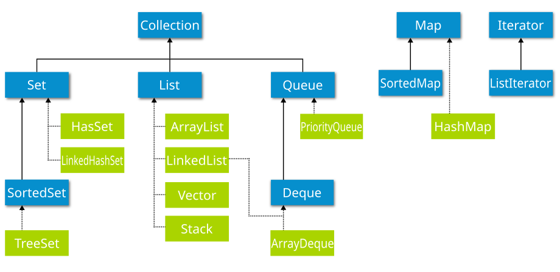
¿Qué consideras una colección? Pues seguramente al pensar en el término se te viene a la cabeza una colección de libros o algo parecido, y la idea no va muy desencaminada. Una colección a nivel de software es un grupo de elementos almacenados de forma conjunta en una misma estructura; eso son las colecciones.
Las colecciones definen un conjunto de interfaces, clases genéricas y algoritmos que permiten manejar grupos de objetos, todo ello enfocado a potenciar la reusabilidad del software y facilitar las tareas de programación. Te parecerá increíble el tiempo que se ahorra empleando colecciones y cómo se reduce la complejidad del software usándolas adecuadamente. Las colecciones permiten almacenar y manipular grupos de objetos que, a priori, están relacionados entre sí (aunque no es obligatorio que estén relacionados, lo lógico es que si se almacenan juntos es porque tienen alguna relación entre sí), pudiendo trabajar con cualquier tipo de objeto (de ahí que se empleen los genéricos en las colecciones).
Además, las colecciones permiten realizar algunas operaciones útiles sobre los elementos almacenados, tales como búsqueda u ordenación. En algunos casos es necesario que los objetos almacenados cumplan algunas condiciones (que implementen algunas interfaces), para poder hacer uso de estos algoritmos.
Las colecciones son en general elementos de programación que están disponibles en muchos lenguajes de programación. En algunos lenguajes de programación su uso es algo más complejo (como es el caso de C++), pero en Java su uso es bastante sencillo.
Las colecciones en Java parten de una serie de interfaces básicas. Cada interfaz define un modelo de colección y las operaciones que se pueden llevar a cabo sobre los datos almacenados, por lo que es necesario conocerlas. La interfaz inicial, a través de la cual se han construido el resto de colecciones, es la interfaz java.util.Collection, que define las operaciones comunes a todas las colecciones derivadas.
A continuación se muestran los métodos más importantes definidos por esta interfaz, ten en cuenta que Collection es una interfaz genérica donde <E> es el parámetro de tipo (podría ser cualquier clase):
| método | descripción |
|---|---|
int size() |
retorna el número de elementos de la colección. |
boolean isEmpty() |
retornará verdadero si la colección está vacía. |
boolean contains (Object element) |
retornará verdadero si la colección tiene el elemento pasado como parámetro. |
boolean add(E element) |
permitirá añadir elementos a la colección. |
boolean remove(Object element) |
permitirá eliminar elementos de la colección. |
Iterator<E> iterator() |
permitirá crear un iterador para recorrer los elementos de la colección (esto se ve más adelante, no te preocupes). |
Object[] toArray() |
permite pasar la colección a un array de objetos tipo Object. |
boolean containsAll(Collection<?> c) |
permite comprobar si una colección contiene los elementos existentes en otra colección, si es así, retorna verdadero. |
boolean addAll(Collection<?> extends E> c) |
permite añadir todos los elementos de una colección a otra colección, siempre que sean del mismo tipo (o deriven del mismo tipo base). |
boolean removeAll(Collection<?> c) |
si los elementos de la colección pasada como parámetro están en nuestra colección, se eliminan, el resto se quedan. |
boolean retainAll(Collection<?> c) |
si los elementos de la colección pasada como parámetro están en nuestra colección, se dejan, el resto se eliminan. |
void clear() |
vaciar la colección. |
Más adelante veremos cómo se usan estos métodos, será cuando veamos las implementaciones (clases genéricas que implementan alguna de las interfaces derivadas de la interfaz Collection).
Ejemplo 2.01: utilización de métodos de la interfaz Collection
Para ello, utilizaremos un TreeSet:
package UT07.P2_Collection;
import java.util.TreeSet;
import java.util.Collection;
import java.util.Iterator;
public class EjemploColeccion {
public static void main(String[] args) {
// Crear una colección de tipo TreeSet
Collection<String> nombres = new TreeSet<>();
// Añadir elementos con add(E element)
nombres.add("Ana");
nombres.add("Luis");
nombres.add("Carlos");
// Imprimir la colección
System.out.println("Colección inicial: " + nombres);
// Tamaño de la colección con size()
System.out.println("Número de elementos: " + nombres.size());
// Verificar si está vacía con isEmpty()
System.out.println("¿Está vacía?: " + nombres.isEmpty());
// Verificar si contiene un elemento con contains(Object element)
System.out.println("¿Contiene 'Luis'?: " + nombres.contains("Luis"));
// Eliminar un elemento con remove(Object element)
nombres.remove("Carlos");
System.out.println("Después de eliminar 'Carlos': " + nombres);
// Convertir la colección en un array con toArray()
Object[] array = nombres.toArray();
System.out.print("Elementos convertidos en array: ");
for (Object item : array) {
System.out.print(item + " ");
}
System.out.println();
// Crear otra colección
Collection<String> otrosNombres = new TreeSet<>();
otrosNombres.add("Ana");
otrosNombres.add("Pepe");
// Verificar si contiene todos los elementos de otra colección con containsAll(Collection<?> c)
System.out.println("¿Contiene todos los elementos de 'otrosNombres'?: " + nombres.containsAll(otrosNombres));
// Añadir todos los elementos de otra colección con addAll(Collection<?> extends E> c)
nombres.addAll(otrosNombres);
System.out.println("Después de añadir 'otrosNombres': " + nombres);
// Eliminar todos los elementos de otra colección con removeAll(Collection<?> c)
nombres.removeAll(otrosNombres);
System.out.println("Después de eliminar 'otrosNombres': " + nombres);
// Volver a agregar elementos para probar retainAll()
nombres.add("Ana");
nombres.add("Pepe");
nombres.add("Juan");
// Retener solo los elementos que están en otra colección con retainAll(Collection<?> c)
nombres.retainAll(otrosNombres);
System.out.println("Después de retener solo 'otrosNombres': " + nombres);
// Crear un iterador con iterator()
Iterator<String> iterador = nombres.iterator();
System.out.print("Elementos recorridos con iterator(): ");
while (iterador.hasNext()) {
System.out.print(iterador.next() + " ");
}
System.out.println();
// Vaciar la colección con clear()
nombres.clear();
System.out.println("Después de clear(): " + nombres);
System.out.println("¿Está vacía ahora?: " + nombres.isEmpty());
}
}2. Conjuntos (sets)
¿Con qué relacionarías los conjuntos? Seguro que con las matemáticas. Los conjuntos son un tipo de colección que no admite duplicados, derivados del concepto matemático de conjunto.
La interfaz java.util.Set define cómo deben ser los conjuntos, e implementa la interfaz Collection, aunque no añade ninguna operación nueva. Las implementaciones (clases genéricas que implementan la interfaz Set) más usadas son las siguientes:
🔄 java.util.HashSet
Conjunto que almacena los objetos usando tablas hash (estructura de datos formada básicamente por un array donde la posición de los datos va determinada por una función hash, permitiendo localizar la información de forma extraordinariamente rápida. Los datos están ordenados en la tabla en base a un resumen numérico de los mismos (en hexadecimal generalmente) obtenido a partir de un algoritmo para cálculo de resúmenes, denominadas funciones hash. El resumen no tiene significado para un ser humano, se trata simplemente de un mecanismo para obtener un número asociado a un conjunto de datos. El resumen, de un buen algoritmo hash, no se parece en nada al contenido almacenado) lo cual acelera enormemente el acceso a los objetos almacenados.
Inconvenientes:
- Los datos se ordenan por el resumen obtenido, y no por el valor almacenado, así que no almacenan los objetos de forma ordenada (al contrario, pueden aparecer completamente desordenados).
- Necesitan bastante memoria.
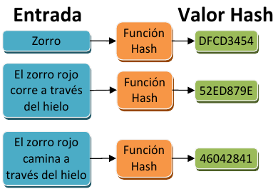
Ejemplo 2.02: uso de HashSet
Para crear un conjunto, simplemente creamos el HashSet indicando el tipo de objeto que va a almacenar, dado que es una clase genérica que puede trabajar con cualquier tipo de dato debemos crearlo como sigue (no olvides hacer la importación de java.util.HashSet primero):
HashSet<Integer> conjunto = new HashSet<Integer>();
HashSet<Integer> conjunto = new HashSet<>(); //a partir de Java 7add (definido por la interfaz Set). Los objetos que se pueden insertar serán siempre del tipo especificado al crear el conjunto:
int n = 10;
if ( !conjunto.add(n) ){
System.out.println("Número ya en la lista.");
}Si el elemento ya está en el conjunto, el método add retornará false indicando que no se pueden insertar duplicados. Si todo va bien, retornará true.
Ejemplo 2.03: uso de HashSet
Realiza un pequeño programa que pregunte al usuario 5 números diferentes (almacenándolos en un HashSet), y que después calcule la suma de los mismos (usando un bucle for‐each).
Solución
Una solución posible podría ser la siguiente. Fíjate en la solución y verás que el uso de conjuntos ha simplificado enormemente el ejercicio, permitiendo al programador o la programadora centrarse en otros aspectos:
package UT07.P2_Sets;
import java.util.HashSet;
import java.util.Scanner;
public class EjemploHashSet {
public static void main(String[] args) {
HashSet<Integer> conjunto = new HashSet<Integer>();
Scanner teclado = new Scanner(System.in);
int numero;
do {
try {
System.out.print("Introduce un número " + (conjunto.size() + 1) + ": ");
numero = teclado.nextInt();
if (!conjunto.add(numero)) {
System.out.println("Número ya en la lista. Introducir otro.");
}
} catch (NumberFormatException e) {
System.out.println("Número erróneo.");
}
} while (conjunto.size() < 5);
// Calcular la suma
Integer suma = 0;
for (Integer i : conjunto) {
suma = suma + i;
}
System.out.println("La suma es: " + suma);
}
}🔗 java.util.LinkedHashSet
Conjunto que almacena objetos combinando tablas hash, para un acceso rápido a los datos, y listas enlazadas (estructura de datos que almacena los objetos enlazándolos entre sí a través de un apuntador de memoria o puntero, manteniendo un orden, que generalmente es el del momento de inserción, pero que puede ser otro. Cada dato se almacena en una estructura llamada nodo en la que existe un campo, generalmente llamado siguiente, que contiene la dirección de memoria del siguiente nodo (con el siguiente dato) para conservar el orden. El orden de almacenamiento es el de inserción, por lo que se puede decir que es una estructura ordenada a medias.
Si no hay siguiente nodo, se indica poniendo nulo (null) en la variable que contiene el siguiente nodo.
Las listas enlazadas tienen un montón de operaciones asociadas en las que no vamos a profundizar: eliminación de un nodo de la lista, inserción de un nodo al final, al principio o entre dos nodos, etc.
Gracias a las colecciones podremos utilizar listas enlazadas sin tener que complicarnos en detalles de programación.
Inconvenientes: necesitan bastante memoria y es algo más lenta que HashSet.
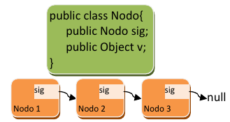
Ejemplo 2.04: uso de LinkedHashSet
package UT07.P2_Sets;
import java.util.LinkedHashSet;
public class EjemploLinkedHashSet {
public static void main(String[] args) {
LinkedHashSet<Integer> ls = new LinkedHashSet<>();
ls.add(4);
ls.add(3);
ls.add(1);
ls.add(99);
for (Integer item : ls) {
System.out.print(item + " ");
}
}
}Al ser un LinkedHashSet, los valores salen ordenados según el momento de inserción en el conjunto).
Resultado mostrado por pantalla:
4 3 1 99🌲 java.util.TreeSet
Conjunto que almacena los objetos usando unas estructuras conocidas como árboles rojo‐negro. Son más lentas que los dos tipos anteriores. pero tienen una gran ventaja: los datos almacenados se ordenan por valor. Es decir, que aunque se inserten los elementos de forma desordenada, internamente se ordenan dependiendo del valor de cada uno.
La estructura TreeSet internamente árboles. Los árboles son como las listas pero mucho más complejos. En vez de tener un único elemento siguiente, pueden tener dos o más elementos siguientes, formando estructuras organizadas y jerárquicas.
Los nodos se diferencian en dos tipos: nodos padre y nodos hijo; un nodo padre puede tener varios nodos hijo asociados (depende del tipo de árbol), dando lugar a una estructura que parece un árbol invertido (de ahí su nombre).
En la figura de abajo se puede apreciar un árbol donde cada nodo puede tener dos hijos, denominados izquierdo (izq) y derecho (dch). Puesto que un nodo hijo puede también ser padre a su vez, los árboles se suelen visualizar para su estudio por niveles para entenderlos mejor, donde cada nivel contiene hijos de los nodos del nivel anterior, excepto el primer nivel (que no tiene padre).
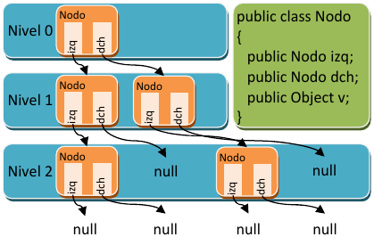
Los árboles son estructuras complejas de manejar y que permiten operaciones muy sofisticadas. Los árboles usados en los TreeSet, los árboles rojo‐negro, son árboles auto-ordenados, es decir, que al insertar un elemento, este queda ordenado por su valor de forma que al recorrer el árbol, pasando por todos los nodos, los elementos salen ordenados. El ejemplo mostrado en la imagen es simplemente un árbol binario, el más simple de todos.
Ejemplo 2.05: uso de TreeSet
package UT07.P2_Sets;
import java.util.TreeSet;
public class EjemploTreeSet {
public static void main(String[] args) {
TreeSet<Integer> ts = new TreeSet<>();
ts.add(4);
ts.add(3);
ts.add(1);
ts.add(99);
for (Integer item : ts) {
System.out.print(item + " ");
}
}Al ser un TreeSet el resultado sale ordenado por valor.
Resultado mostrado por pantalla:
1 3 4 99| Característica | 🔄 HashSet | 🔗 LinkedHashSet | 🌲 TreeSet |
|---|---|---|---|
| Orden de elementos | No mantiene orden | Mantiene orden de inserción | Ordenado de forma natural |
| Velocidad de búsqueda | Muy rápida (O(1)) | Rápida (O(1)) | Más lenta (O(log n)) |
| Velocidad de inserción | Muy rápida (O(1)) | Rápida (O(1)) | Más lenta (O(log n)) |
| Uso de memoria | Bajo | Alto (por la lista enlazada) | Alto (por la estructura de árbol) |
| Uso recomendado | Cuando la velocidad es prioridad y no importa el orden | Cuando se necesita orden de inserción | Cuando se necesita ordenar automáticamente los elementos |
| Estructura interna | Tabla Hash | Tabla Hash + Lista enlazada | Árbol rojo-negro |
2.2. Acceso
Y ahora te preguntarás, ¿cómo accedo a los elementos almacenados en un conjunto? Para obtener los elementos almacenados en un conjunto hay que usar iteradores, que permiten obtener los elementos del conjunto uno a uno de forma secuencial (no hay otra forma de acceder a los elementos de un conjunto, es su inconveniente).
Los iteradores se ven en mayor profundidad más adelante, de momento, vamos a usar iteradores de forma transparente, a través de una estructura for especial, denominada bucle for-each o bucle "para cada". En el siguiente código se usa un bucle foreach, en él la variable i va tomando todos los valores almacenados en el conjunto hasta que llega al último:
for (Integer item: conjunto) {
System.out.println("Elemento almacenado:" + item);
}2.3. Operar con elementos
¿Cómo podría copiar los elementos de un conjunto de uno a otro? ¿Hay que usar un bucle for y recorrer toda la lista para ello? ¡Qué va! Para facilitar esta tarea, los conjuntos, y las colecciones en general, facilitan un montón de operaciones para poder combinar los datos de varias colecciones. Ya se vieron en un apartado anterior, aquí simplemente vamos poner un ejemplo de su uso.
Partimos del siguiente ejemplo, en el que hay dos colecciones de diferente tipo, cada una con 4 números enteros:
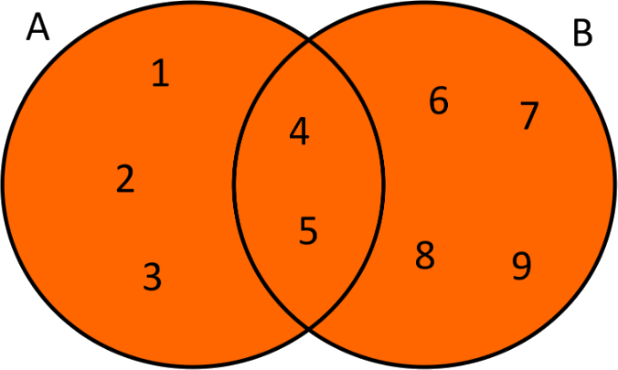
TreeSet<Integer> a = new TreeSet<Integer>();
a.add(1); a.add(2); a.add(3); a.add(4); a.add(5); // a: 1, 2, 3, 4 y 5
LinkedHashSet<Integer> b = new LinkedHashSet<Integer>();
b.add(4); b.add(5); b.add(6); b.add(7); b.add(8); b.add(9); // b: 4, 5, 6, 7, 8 y 9En el ejemplo anterior, el literal de número se convierte automáticamente a la clase envoltorio Integer sin tener que hacer nada, lo cual es una ventaja. Veamos las formas de combinar ambas colecciones:
- Unión. Añadir todos los elementos del conjunto b en el conjunto a.
a.addAll(b);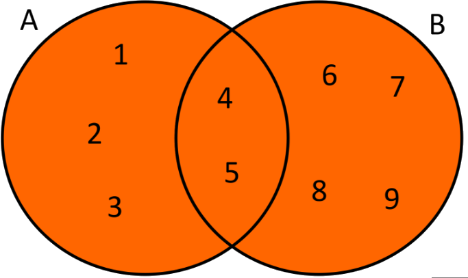
En el conjunto a estarán todos los del conjunto a, añadiendo los del b, pero sin repetir los que ya están (4, 5):
1, 2, 3, 4, 5, 6, 7, 8, 9, 10- Diferencia. Eliminar los elementos del conjunto b que puedan estar en el conjunto a.
a.removeAll(b);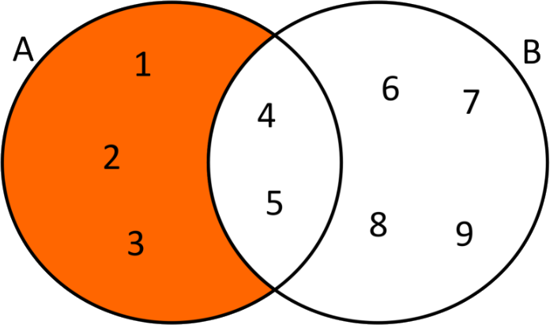
En el conjunto a estarán todos los elementos del conjunto a, que no estén en el conjunto b:
1, 2, 3- Intersección. Retiene los elementos comunes a ambos conjuntos.
a.retainAll(b);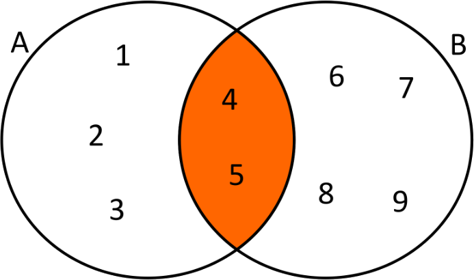
En el conjunto a estarán todos los elementos del conjunto a, que también están en el conjunto b:
4, 5Recuerda
Estas operaciones son comunes a todas las colecciones.
Ejemplo 2.06: operaciones en conjuntos (sets)
package UT07.P2_Sets;
import java.util.Collection;
import java.util.LinkedHashSet;
import java.util.TreeSet;
public class EjemploSets {
private static void imprimirColeccion(Collection<?> c) {
for (Object item : c) {
System.out.print(item.toString() + " ");
}
System.out.println("");
}
public static void main(String[] args) {
TreeSet<Integer> conjuntoA = new TreeSet<>();
conjuntoA.add(1);
conjuntoA.add(2);
conjuntoA.add(3);
conjuntoA.add(4);
conjuntoA.add(5); // Elementos del conjunto A: 1, 2, 3, 4, 5
LinkedHashSet<Integer> conjuntoB = new LinkedHashSet<>();
conjuntoB.add(4);
conjuntoB.add(5);
conjuntoB.add(6);
conjuntoB.add(7);
conjuntoB.add(8);
conjuntoB.add(9); // Elementos del conjunto B: 4, 5, 6, 7, 8 y 9
conjuntoA.addAll(conjuntoB);
imprimirColeccion(conjuntoA); // Unión: 1 2 3 4 5 6 7 8 9
conjuntoA.removeAll(conjuntoB);
imprimirColeccion(conjuntoA); // Diferencia: 1 2 3
//recolocamos todo como al principio
conjuntoA.add(4);
conjuntoA.add(5);
conjuntoA.add(6);
conjuntoA.retainAll(conjuntoB);
imprimirColeccion(conjuntoA); // Intersección: 4 5
}
}2.4. Ordenación
Por defecto, los TreeSet ordenan sus elementos de forma ascendente, pero, ¿se podría cambiar el orden de ordenación? Los TreeSet tienen un conjunto de operaciones adicionales, además de las que incluye por el hecho de ser un conjunto, que permite entre otras cosas, cambiar la forma de ordenar los elementos. Esto es especialmente útil cuando el tipo de objeto que se almacena no es un simple número, sino algo más complejo (un artículo por ejemplo). TreeSet es capaz de ordenar tipos básicos (números, cadenas y fechas) pero otro tipo de objetos no puede ordenarlos con tanta facilidad.
Para indicar a un TreeSet cómo tiene que ordenar los elementos, debemos decirle cuándo un elemento va antes o después que otro, y cuándo son iguales. Para ello, utilizamos la interfaz genérica java.util.Comparator, usada en general en algoritmos de ordenación, como veremos más adelante.
Se trata de crear una clase que implemente dicha interfaz, así de fácil. Dicha interfaz requiere de un único método que debe calcular si un objeto pasado por parámetro es mayor, menor o igual que otro del mismo tipo. Veamos un ejemplo general de cómo implementar un comparador para una hipotética clase Objeto:
class ComparadorDeObjetos implements Comparator<Objeto> {
public int compare(Objeto o1, Objeto o2) {
// ... implementación del método compare
}
}La interfaz Comparator obliga a implementar un único método, es el método compare , el cual tiene dos parámetros: los dos elementos a comparar. Las reglas son sencillas, a la hora de personalizar dicho método:
- Si el primer objeto (o1) < el segundo (o2), debe retornar un número entero negativo.
- Si el primer objeto (o1) > el segundo (o2), debe retornar un número entero positivo.
- Si ambos son iguales, debe retornar 0.
A veces, cuando el orden que deben tener los elementos es diferente al orden real (por ejemplo cuando ordenamos los números en orden inverso), la definición de antes puede ser un poco liosa, así que es recomendable en tales casos pensar de la siguiente forma:
- Si el primer objeto (o1) debe ir antes que el segundo objeto (o2), retornar entero negativo.
- Si el primer objeto (o1) debe ir después que el segundo objeto (o2), retornar entero positivo.
- Si ambos son iguales, debe retornar 0.
Una vez creado el comparador simplemente tenemos que pasarlo como parámetro en el momento de la creación al TreeSet , y los datos internamente mantendrán dicha ordenación:
TreeSet<Objeto> ts = new TreeSet<Objeto>(new ComparadorDeObjetos());Otra forma de ordenación
Hay otra manera de definir esta ordenación, pero lo estudiaremos más a fondo en el punto 7.4 Comparadores.
Ejemplo 2.07: uso interfaz genérica Comparator
package UT07.P2_Comparator;
import java.io.*;
import java.util.*;
class Estudiante {
private int id;
private String nombre;
public Estudiante(int valor, String nombre) {
this.id = valor;
this.nombre = nombre;
}
public String getNombre() {
return this.nombre;
}
public int getId() {
return this.id;
}
}
// Comparador mediante atributo entero
class IdComparator implements Comparator<Estudiante> {
public int compare(Estudiante e1, Estudiante e2) {
return e1.getId()-e2.getId();
}
}
// Comparador mediante atributo String
class NombreComparator implements Comparator<Estudiante> {
public int compare(Estudiante e1, Estudiante e2) {
return e1.getNombre().compareTo(e2.getNombre());
}
}package UT07.P2_Comparator;
class TestEstudiante {
public static void main (String[] args){
// Crear TreeSet con Comparador con objeto Estudiante
TreeSet<Estudiante> tsId = new TreeSet<Estudiante>(new IdComparator());
tsId.add(new Estudiante(450,"Laura"));
tsId.add(new Estudiante(341,"Esther"));
tsId.add(new Estudiante(134,"Daniel"));
tsId.add(new Estudiante(590,"Jorge"));
System.out.println("Ordenación por marca:");
for(Estudiante elemento : tsId) {
System.out.print(elemento.getNombre()+"\t"+elemento.getId());
System.out.println();
}
System.out.println();
TreeSet<Estudiante> tsNombre= new TreeSet<Estudiante>(new NombreComparator());
tsNombre.add(new Estudiante(450,"Laura"));
tsNombre.add(new Estudiante(341,"Esther"));
tsNombre.add(new Estudiante(134,"Daniel"));
tsNombre.add(new Estudiante(590,"Jorge"));
System.out.println("Ordenación por nombre:");
for(students elemento : tsNombre) {
System.out.print(elemento.getNombre() +"\t"+ elemento.getId());
System.out.println();
}
}
}Ordenación por marca:
Daniel 134
Esther 341
Laura 450
Jorge 590
Ordenación por nombre:
Daniel 134
Esther 341
Jorge 590
Laura 4503. Listas

¿En qué se diferencia una lista de un conjunto? Las listas son elementos de programación un poco más avanzados que los conjuntos. Su ventaja es que amplían el conjunto de operaciones de las colecciones añadiendo operaciones extra. Veamos algunas de ellas:
- Sí pueden almacenar duplicados. Si no queremos duplicados, hay que verificar manualmente que el elemento no esté en la lista antes de su inserción.
- Acceso posicional. Podemos acceder a un elemento indicando su posición en la lista.
- Búsqueda. Es posible buscar elementos en la lista y obtener su posición. En los conjuntos, al ser colecciones sin aportar nada nuevo, solo se podía comprobar si un conjunto contenía o no un elemento, retornando verdadero o falso. Las listas mejoran este aspecto.
- Extracción de sublistas. Es posible obtener una lista que contenga solo una parte de los elementos de forma muy sencilla.
En Java, para las listas se dispone de una interfaz llamada java.util.List, y dos implementaciones (java.util.LinkedList y java.util.ArrayList), con diferencias significativas entre ellas. Los métodos de la interfaz List, que obviamente estarán en todas las implementaciones, y que permiten las operaciones anteriores son:
| método | descripción |
|---|---|
E get(int index) |
el método get permite obtener un elemento partiendo de su posición (index). |
E set(int index, E element) |
el método set permite cambiar el elemento almacenado en una posición de la lista (index), por otro (element). |
void add(int index, E element) |
se añade otra versión del método add, en la cual se puede insertar un elemento (element) en la lista en una posición concreta (index), desplazando los existentes. |
E remove(int index) |
se añade otra versión del método remove, esta versión permite eliminar un elemento indicando su posición en la lista (desplazando los existentes a izquierda). |
boolean addAll(int index, Collection<? extends E> c) |
se añade otra versión del método addAll , que permite insertar una colección pasada por parámetro en una posición de la lista, desplazando el resto de elementos. |
int indexOf(Object o) |
el método indexOf permite conocer la posición (índice) de un elemento, si dicho elemento no está en la lista retornará ‐1. |
int lastIndexOf(Object o) |
el método lastIndexOf nos permite obtener la última ocurrencia del objeto en la lista (dado que la lista sí puede almacenar duplicados). |
List<E> subList(int from, int to) |
el método subList genera una sublista (una vista parcial de la lista) con los elementos comprendidos entre la posición inicial (incluida) y la posición final (no incluida). |
A tener en cuenta sobre List
Ten en cuenta que los elementos de una lista empiezan a numerarse por 0. Es decir, que el primer elemento de la lista es el 0.
Ten en cuenta también que List es una interfaz genérica, por lo que <E> corresponde con el tipo base usado como parámetro genérico al crear la lista.
3.1. Uso
Y, ¿cómo se usan las listas? Pues para usar una lista haremos uso de sus implementaciones LinkedList y ArrayList. Veamos un ejemplo de su uso y después obtendrás respuesta a esta pregunta.
Ejemplo 2.08: uso de clase LinkedList (válido también para ArrayList)
Antes de nada no olvides importar las clases java.util.LinkedList y java.util.ArrayList según sea necesario.
En este ejemplo se usan los métodos de acceso posicional a la lista:
// declaración y creación del LinkedList de enteros.
LinkedList<Integer> ll = new LinkedList<>();
ll.add(1); // añade un elemento al final de la lista.
ll.add(3); // añade otro elemento al final de la lista.
ll.add(1,2); // añade en la posición 1 el elemento 2.
// suma los valores contenidos en la posición 1 y 2, y lo agrega al final.
ll.add(ll.get(1) + ll.get(2));
ll.remove(0); // elimina el primer elementos de la lista.
// contenido final de la lista:
// recorrer la colección:
for (Integer elemento: ll){
System.out.print(elemento + " ");
}
// devuelve: 2 3 5Ejemplo 2.09: uso de ArrayList, obtener posición de elemento en la lista
ArrayList<Integer> al = new ArrayList<>(); // declaración y creación del ArrayList de enteros.
al.add(10);
al.add(11); // añadimos dos elementos a la lista.
al.set(al.indexOf(11), 12); // sustituimos el 11 por el 12, primero lo buscamos y luego lo reemplazamos.En el ejemplo anterior, se emplea tanto el método indexOf para obtener la posición de un elemento, como el método set para reemplazar el valor en una posición, una combinación muy habitual.
El ejemplo anterior generará un ArrayList que contendrá dos números, el 10 y el 12.
Ejemplo 2.10: uso ArrayList, más complejo
al.addAll(0, ll.subList(1, ll.size()));Cuidado
subList ==> Devuelve una vista de la porción de esta lista entre el especificado fromIndex, inclusive, y toIndex, exclusivo (API de Java).
Este ejemplo es especial porque usa sublistas. Se usa el método size para obtener el tamaño de la lista. Después el método subList para extraer una sublista de la lista (que incluía en origen los números 2, 3 y 5), desde la posición 1 hasta el final de la lista (lo cual dejaría fuera al primer elemento). Y por último, se usa el método addAll para añadir todos los elementos de la sublista al ArrayList anterior desde su posición 0. Y quedaría:
3, 5, 10 y 12.clear sobre una sublista, se borrarán todos los elementos de la sublista, pero también se borrarán dichos elementos de la lista original:
al.subList(0, 2).clear();Lo mismo ocurre al añadir un elemento, se añade en la sublista y en la lista original.
Ejemplo 2.11: uso de LinkedList y ArrayList
package UT07.P2_Lists;
import java.util.ArrayList;
import java.util.Collection;
import java.util.LinkedList;
public class EjemploListas2 {
// método para imprimir colecciones:
private static void imprimirColeccion(Collection<?> c) {
for (Object elemento : c) {
System.out.print(elemento.toString() + " ");
}
System.out.println("");
}
public static void main(String[] args) {
LinkedList<Integer> ll = new LinkedList<>(); //declaración+creación LinkedList
ll.add(1); //añade un elemento al final de la lista
ll.add(3); //añade otro elemento al final de la lista
ll.add(1, 2); //añade en la posición 1 el elemento 2
ll.add(t.get(1) + ll.get(2)); //suma contendio de posición 1 y 2, y agrega al final
ll.remove(0); //elimina el primer elementos de la lista
imprimirColeccion(ll); //2 3 5
ArrayList<Integer> al = new ArrayList<>(); //declaración+creación ArrayList
al.add(10);
al.add(11); //añadimos dos elementos a la lista.
al.set(al.indexOf(11), 12); //sustituimos el 11 por el 12, primero lo buscamos y luego lo reemplazamos.
al.addAll(0, t.subList(1, t.size()));
imprimirColeccion(al); //3 5 10 12
al.subList(0, 2).clear();
imprimirColeccion(al); //10 12
}
}3.2. LinkedList y ArrayList
¿Y en qué se diferencia un LinkedList de un ArrayList ?
🔗 LinkedList
Utilizan listas doblemente enlazadas, que son listas enlazadas (como se vió en un apartado anterior), pero que permiten ir hacia atrás en la lista de elementos. Los elementos de la lista se encapsulan en los llamados nodos.
Los nodos van enlazados unos a otros para no perder el orden y no limitar el tamaño de almacenamiento. Tener un doble enlace significa que en cada nodo se almacena la información de cuál es el siguiente nodo y además, de cuál es el nodo anterior. Si un nodo no tiene nodo siguiente o nodo anterior, se almacena null(o nulo) para ambos casos.
🔢 ArrayList
Estos se implementan utilizando arrays que se van redimensionando conforme se necesita más espacio o menos. La redimensión es transparente a nosotros, no nos enteramos cuándo se produce, pero eso redunda en una diferencia de rendimiento notable dependiendo del uso. Los ArrayList son más rápidos en cuanto a acceso a los elementos, acceder a un elemento según su posición es más rápido en un array que en una lista doblemente enlazada (hay que recorrer la lista). En cambio, eliminar un elemento implica muchas más operaciones en un array que en una lista enlazada de cualquier tipo.
¿Y esto qué quiere decir? Que si se van a realizar muchas operaciones de eliminación de elementos sobre la lista, conviene usar una lista enlazada (LinkedList), pero si no se van a realizar muchas eliminaciones, sino que solamente se van a insertar y consultar elementos por posición, conviene usar una lista basada en arrays redimensionados (ArrayList ).
| Característica | 🔗 LinkedList | 🔢 ArrayList |
|---|---|---|
| Estructura | Lista doblemente enlazada (nodos con referencias al anterior y siguiente). | Array redimensionable (elementos contiguos en memoria). |
| Acceso a elementos | Lento (O(n)), hay que recorrer la lista. | Rápido (O(1)), acceso directo por índice. |
| Inserción/Eliminación | Rápida (O(1) si se tiene el nodo, O(n) si hay que buscarlo). | Lenta (O(n)), ya que hay que desplazar elementos. |
| Uso de memoria | Más memoria por referencias adicionales (next y prev). |
Menos memoria, solo almacena los datos. |
| Redimensionamiento | No necesita, se expande dinámicamente sin copias. | Puede requerir redimensionamiento y copia de datos. |
| Ideal para... | Muchas inserciones/eliminaciones en el medio de la lista. | Muchas consultas y acceso rápido a elementos por índice. |
| Interfaces adicionales | Implementa Queue y Deque (uso como pila o cola). |
No implementa Queue ni Deque. |
LinkedList tiene otras ventajas que nos puede llevar a su uso. Implementa las interfaces java.util.Queue y java.util.Deque. Dichas interfaces permiten hacer uso de las listas como si fueran una cola de prioridad o una pila, respectivamente.
➡️ colas
También conocidas como colas de prioridad, son una lista pero que aportan métodos para trabajar de forma diferente. ¿Tú sabes lo que es hacer cola para que te atiendan en una ventanilla? Pues igual. Se trata de que el primero que llega es el primero en ser atendido (FIFO, First In First Out en inglés). Simplemente se aportan tres métodos nuevos:
| método | descripción |
|---|---|
boolean add(E e) y boolean offer(E e) |
retornarán true si se ha podido insertar el elemento al final de la LinkedList. |
E poll() |
retornará el primer elemento de la LinkedList y lo eliminará de la misma. Al insertar al final, los elementos más antiguos siempre están al principio. Retornará null si la lista está vacía. |
E peek() |
retornará el primer elemento de la LinkedList pero no lo eliminará, permite examinarlo. Retornará null si la lista está vacía. |
Dichos métodos están disponibles en las listas enlazadas LinkedList .
📚 pilas
Mucho menos usadas, son todo lo contrario a las listas. Una pila es igual que una montaña de libros o de hojas en blanco, para añadir libros/hojas nuevas se ponen encima del resto, y para retirar una se coge la primera que hay encima de todas. En las pilas el último en llegar es el primero en ser atendido (LIFO, Last In First Out en inglés). Para ello se proveen de tres métodos:
| Método | Descripción | Ejemplo de Uso | Resultado |
|---|---|---|---|
void push(E item) |
Agrega un elemento en la parte superior de la pila. | stack.push(10); |
Inserta 10 en la pila. |
E pop() |
Elimina y devuelve el elemento en la parte superior de la pila. | int x = stack.pop(); |
Extrae y devuelve el último elemento insertado. Si la pila está vacía, lanza EmptyStackException. |
E peek() |
Muestra el elemento en la parte superior sin eliminarlo. | int y = stack.peek(); |
Devuelve el elemento en la cima sin modificar la pila. Si la pila está vacía, lanza EmptyStackException. |
Ejemplo 2.12: uso Stack (pila)
import java.util.Stack;
public class EjemploStack {
public static void main(String[] args) {
Stack<Integer> stack = new Stack<>();
// Agregar elementos a la pila
stack.push(10);
stack.push(20);
stack.push(30);
System.out.println("Elemento en la cima: " + stack.peek()); // 30
System.out.println("Elemento eliminado: " + stack.pop()); // 30
System.out.println("Elemento en la cima después de pop: " + stack.peek()); // 20
}
}Las pilas se usan menos y haremos menos hincapié en ellas. Simplemente ten en mente que, tanto las colas como las pilas, son una lista enlazada sobre la que se hacen operaciones especiales.
3.3. A tener en cuenta
No es lo mismo usar las colecciones (listas y conjuntos) con objetos inmutables (Strings, Integer, etc.) que con objetos mutables. Los objetos inmutables no pueden ser modificados después de su creación, por lo que cuando se incorporan a la lista, a través de los métodos add , se pasan por copia (es decir, se realiza una copia de los mismos). En cambio los objetos mutables (como las clases que tú puedes crear), no se copian, y eso puede producir efectos no deseados.
Imagínate la siguiente clase, que contiene un número:
class Test {
public Integer num;
Test (int num) {
this.num = new Integer(num);
}
}La clase de antes es mutable, por lo que no se pasa por copia a la lista. Ahora imagina el siguiente código en el que se crea una lista que usa este tipo de objeto, y en el que se insertan dos objetos:
Test p1 = new Test(11); // se crea un objeto Test donde el entero que contiene vale 11.
Test p2 = new Test(12); // se crea otro objeto Test donde el entero que contiene vale 12.
LinkedList<Test> lista = new LinkedList<Test>(); // creamos una lista enlazada para objetos tipo Test.
lista.add(p1); // añadimos el primero objeto test.
lista.add(p2); // añadimos el segundo objeto test.
for (Test p:lista){
System.out.println(p.num); // mostramos la lista de objetos.
}¿Qué mostraría por pantalla el código anterior? Simplemente mostraría los números 11 y 12.
Ahora bien, ¿qué pasa si modificamos el valor de uno de los números de los objetos test? ¿Qué se mostrará al ejecutar el siguiente código?
p1.num = 44;
for (Test p:lista){
System.out.println(p.num);
}El resultado de ejecutar el código anterior es que se muestran los números 44 y 12. El número ha sido modificado y no hemos tenido que volver a insertar el elemento en la lista para que en la lista se cambie también. Esto es porque en la lista no se almacena una copia del objeto Test, sino un apuntador a dicho objeto (solo hay una copia del objeto a la que se hace referencia desde distintos lugares).
Cita
Controlar la complejidad es la esencia de la programación. Brian Kernighan
Ejemplo 2.13: uso de ArrayList
Tenemos la clase Producto con:
- Dos atributos: nombre (
String) y cantidad (int). - Un constructor con parámetros.
- Un constructor sin parámetros.
- Métodos
getysetasociados a los atributos.
package UT07.P2_Lists;
public class Producto {
//Atributos
private String nombre;
private int cantidad;
//Métodos
//Constructor con parámetros donde asignamos el valor dado a los atributos
public Producto(String nombre, int cantidad) {
this.nombre = nombre;
this.cantidad = cantidad;
}
//Constructor sin parámetros donde inicializamos los atributos
public Producto() {
//La palabra reservada null se utiliza para inicializar los objetos,
//indicando que el puntero del objeto no apunta a ninguna dirección
//de memoria. No hay que olvidar que String es una clase.
this.nombre = null;
this.cantidad = 0;
}
//Metodo get y set
public String getNombre() {
return nombre;
}
public void setNombre(String nombre) {
this.nombre = nombre;
}
public int getCantidad() {
return cantidad;
}
public void setCantidad(int cantidad) {
this.cantidad = cantidad;
}
}En el programa principal creamos una lista de productos y realizamos operaciones sobre ella:
package UT07.P2_Lists;
import java.util.ArrayList;
public class EjemploListas {
public static void main(String[] args) {
//Definimos 5 instancias de la clase Producto
Producto p1 = new Producto("Pan", 6);
Producto p2 = new Producto("Leche", 2);
Producto p3 = new Producto("Manzanas", 5);
Producto p4 = new Producto("Brocoli", 2);
Producto p5 = new Producto("Carne", 2);
//Definir un ArrayList
ArrayList<Producto> lista = new ArrayList<>();
//Colocar instancias de producto en ArrayList
lista.add(p1);
lista.add(p2);
lista.add(p3);
lista.add(p4);
//Añadimos "Carne" en la posición 1 de la lista
lista.add(1, p5);
//Añadimos "Carne" en la última posición
lista.add(p5);
//Imprimir el contenido del ArrayList
System.out.println(" - Lista con " + lista.size() + " elementos");
for (Producto p : lista) {
System.out.println(p.getNombre() + " : " + p.getCantidad());
}
p5.setCantidad(99); //cambiamos la cantidad al producto, ¿cambiará la lista?
((Producto)lista.get(1)).setCantidad(66);
System.out.println(p5.getCantidad());
//Imprimir el contenido del ArrayList
System.out.println(" - Lista con " + lista.size() + " elementos");
for (Producto p : lista) {
System.out.println(p.getNombre() + " : " + p.getCantidad());
}
//Eliminar todos los valores del ArrayList
lista.clear();
System.out.println(" - Lista final con " + lista.size() + " elementos");
}
}4. Mapas - conjuntos de pares [clave/valor]
¿Cómo almacenarías los datos de un diccionario? Tenemos por un lado cada palabra y por otro su significado. Para resolver este problema existen precisamente los arrays asociativos. Un tipo de array asociativo son los mapas o diccionarios, que permiten almacenar pares de valores conocidos como clave y valor. La clave se utiliza para acceder al valor, como una entrada de un diccionario permite acceder a su definición.
En Java existe la interfaz java.util.Map que define los métodos que deben tener los mapas, y existen tres implementaciones principales de dicha interfaz: 🔀 java.util.HashMap, 🌳 java.util.TreeMap y 🔗 java.util.LinkedHashMap. ¿Te suenan? Claro que sí. Cada una de ellas, respectivamente, tiene características similares a HashSet , TreeSet y LinkedHashSet , tanto en funcionamiento interno como en rendimiento.
Los mapas utilizan clases genéricas para dar extensibilidad y flexibilidad, y permiten definir un tipo base para la clave, y otro tipo diferente para el valor. Veamos un ejemplo de cómo crear un mapa, que es extensible a los otros dos tipos de mapas:
HashMap<String,Integer> t = new HashMap<>();El mapa anterior permite usar cadenas como llaves y almacenar de forma asociada a cada llave, un número entero. Veamos los métodos principales de la interfaz Map, disponibles en todas las implementaciones. En los ejemplos, V es el tipo base usado para el valor (Value) y K el tipo base usado para la llave (Key):
| Método. | Descripción. |
|---|---|
V put(k key, v value); |
Inserta un par de objetos llave (key) y valor (value) en el mapa. Si la llave ya existe en el mapa, entonces retornará el valor asociado que tenía antes, si la llave no existía, entonces retornará null. |
V get(Object key); |
Obtiene el valor asociado a una llave ya almacenada en el mapa. Si no existe la llave, retornará null. |
V remove(Object key); |
Elimina la llave y el valor asociado. Retorna el valor asociado a la llave, por si lo queremos utilizar para algo, o null, si la llave no existe. |
boolean containsKey(Object key); |
Retornará true si el mapa tiene almacenada la llave pasada por parámetro, false en cualquier otro caso. |
boolean containsValue(Object value); |
Retornará true si el mapa tiene almacenado el valor pasado por parámetro, false en cualquier otro caso. |
int size(); |
Retornará el número de pares llave y valor almacenado en el mapa. |
boolean isEmpty(); |
Retornará true si el mapa está vacío, false en cualquier otro caso. |
void clear(); |
Vacía el mapa. |
Ejemplo 2.14: uso de HashMap
package UT07.P2_Maps;
import java.util.HashMap;
public class EjemploMaps {
public static void main(String[] args) {
HashMap<String, Integer> hm = new HashMap<>();
//Insertamos un solo elemento A con valor 1
hm.put("A", 1);
//Busqueda por clave
if (hm.containsKey("A")) {
System.out.printf("Contiene la clave A. Su valor es: %d\n", hs.get("A"));
}
//Busqueda por valor
if (hm.containsValue(0)) {
System.out.println("Contiene el valor 0");
}
//Eliminar el elemento con clave A
hm.remove("A");
//Ahora añadimos varios elementos para imprimirlos
hm.put("A", 1);
hm.put("E", 12);
hm.put("I", 15);
hm.put("O", 0);
hm.put("U", 0);
//Recorremos el mapa y lo imprimimos
for (String elemento : hm.keySet()) {
System.out.printf( "Clave: %s. Valor: %d\n",
elemento,
hm.get(elemenoto) );
}
}
}Un poquito de ...
3.2.1 Uso de arrays
Un array es una colección de elementos del mismo tipo, que tienen un nombre o identificador común.
- Se puede acceder a cada componente del array de forma individual para consultar o modificar su valor.
- El acceso a los componentes se realiza mediante un subíndice, que viene dado por la posición que ocupa el elemento dentro del array.
En la siguiente figura se muestra un array c de enteros:
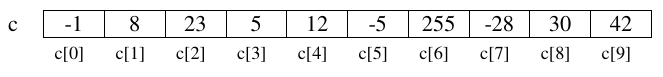
Se ordenan a partir del índice 0
El primer subíndice de un array es el cero. El último subíndice es la longitud del array menos uno.
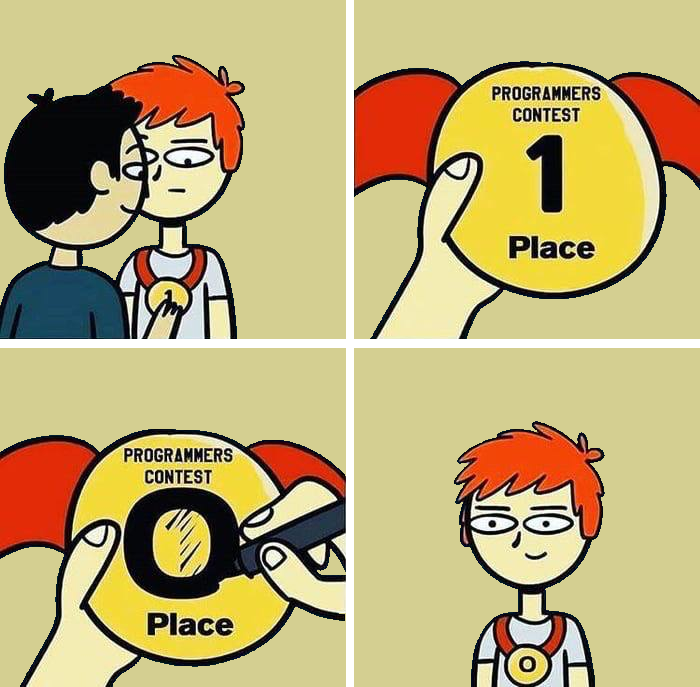
El número de componentes de un array se establece inicialmente al crearlo y no es posible cambiarlo de tamaño. Es por esto que reciben el nombre de estructuras de datos estáticas.
Declaración y creación
Para poder utilizar un array hay que declararlo y crearlo:
tipo nombreVariable[] = new tipo[numElementos];
// o
tipo[] nombreVariable = new tipo[numElementos];En la declaración se establece el nombre de la variable y el tipo de los componentes. Por ejemplo:
double lluvia1[]; // lluvia1 es un array de double
double[] lluvia2; // lluvia2 es un array de doubleEn la declaración anterior no se ha establecido el número de componentes. El número de componentes se indica en la creación, que se hace utilizando el operador new:
lluvia1 = new double[31];Con esta instrucción se establece que el número de elementos del array lluvia son 31, reservando con ello el compilador espacio consecutivo para 31 componentes individuales de tipo double.
Las dos instrucciones anteriores se pueden unir en una sola:
double lluvia2[] = new double[31];El valor mediante el cual se define el número de elementos del array tiene que ser una expresión entera, pero no tiene por qué ser un literal como en el ejemplo anterior. El tamaño de un array se puede establecer durante la ejecución, como en el siguiente ejemplo:
// usamos un array para almacenar las edades de un grupo de personas
// la variable numPersonas contiene el número de personas del grupo
// y se asigna en tiempo de ejecución
Scanner teclado = new Scanner(System.in);
System.out.print("Introduce cuantos elementos debe tener el array edad[]:");
int numPersonas = teclado.nextInt();
int edad[] = new int[numPersonas];Acceso a los componentes
Como ya hemos dicho, el acceso a los componentes del array se realiza mediante subíndices. La sintaxis para referirse a un componente del array es la siguiente:
nombreVariable[subíndice]Tras declarar el array lluvia, se dispone de 31 componentes de tipo double numeradas desde la 0 a la 30 y accesibles mediante la notación: lluvia[0] (componente primera), lluvia[1] (componente segunda) y así sucesivamente hasta la última componente lluvia[30].
Con cada una de las componentes del array de double lluvia es posible efectuar todas las operaciones que podrían realizarse con variables individuales de tipo double, por ejemplo, dadas las declaraciones anteriores, las siguientes instrucciones serían válidas:
System.out.print("Introduce el dato para el componente 0: ");
edad[0] = teclado.nextInt(); //25
System.out.println("El componente [0] vale " + edad[0]);
edad[1] = edad[0] + 1;
edad[2] = edad[0] + edad[1];
edad[2]++;
System.out.println("El componente [1] vale " + edad[1]); //26
System.out.println("El componente [2] vale " + edad[2]); //52Además, hay que tener en cuenta que el subíndice ha de ser una expresión entera, por lo que también son válidas expresiones como las siguientes:
int i;
...
edad[i] = edad[i + 1];
edad[i + 2] = edad[i];Inicialización
Cuando creamos un array, Java inicializa automáticamente sus componentes:
- Con 0 cuando los componentes son de tipo numérico.
- Con false cuando los componentes son
boolean. - Con el carácter de ASCII, cuando los componentes son
char. - Con
nullcuando son objetos (Strings, etc).
Aun así, es probable que estos no sean los valores con los que queremos inicializar el array. Tenemos entonces dos posibilidades:
a) Acceder individualmente a los componentes del array para darles valor:
int edad2[] = new int[10];
edad2[0] = 25;
edad2[1] = 10;
...
edad2[9] = 12;b) inicializar el array en la declaración de la siguiente forma:
int edad3[] = {25,10,23,34,65,23,1,67,54,12};Enumerando los valores con los que se quiere inicializar cada componente, encerrados entre llaves. De hacerlo así, no hay que crear el array con el operador new. Java crea el array con tantos componentes como valores hemos puesto entre llaves.
Un ejemplo práctico
Ya hemos resuelto en temas anteriores el problema de devolver el nombre de un mes dado su número.
Vamos a resolverlo ahora ayudándonos de arrays:
public static String nombreMes(int mes){
String nombre[] = {" " ,"enero", "febrero", "marzo", "abril",
"mayo", "junio", "julio","agosto",
"septiembre", "octubre", "noviembre", "diciembre"};
return nombre[mes];
}El método define un array de String que se inicializa con los nombres de los doce meses. La primera componente del array (nombre[0]) se deja vacía, de forma que enero quede almacenado en nombre[1].
Devolver el nombre del mes indicado se reduce a devolver el componente del array cuyo número indica el parámetro mes: nombre[mes].
Arrays como parámetros. Paso de parámetros por referencia
Hasta el momento sólo se ha considerado el paso de parámetros por valor; de manera que cualquier cambio que el método realice sobre los parámetros formales no modifica el valor que tiene el parámetro real con el que se llama al método. En java, todos los parámetros de tipos simples/primitivos (byte, short, int, long, float, double, boolean, char) se pasan por valor.
Por el contrario, los arrays no son variables de tipo primitivo, y como cualquier otro objeto, se pasan siempre por referencia.
En el paso de parámetros por referencia lo que se pasa en realidad al método es la dirección de la variable u objeto. Es por esto que el papel del parámetro formal es el de ser una referencia al parámetro real; la llamada al método no provoca la creación de una nueva variable. De esta forma, las modificaciones que el método pueda realizar sobre estos parámetros se realizan efectivamente sobre los parámetros reales. En este caso, ambos parámetros (formal y real) se pueden considerar como la misma variable con dos nombres, uno en el método llamante y otro en el llamado o invocado, pero hacen referencia a la misma posición de memoria.
Ejemplo
En el siguiente ejemplo, la variable a, de tipo primitivo, no cambia de valor tras la llamada al método. Sin embargo la variable v, array de enteros, si se ve afectada por los cambios que se han realizado sobre ella en el método:
public static void main(String[] args){
int p = 1;
int v[] = {1,1,1};
metodo(v,p); //Pasar un array como parámetro
System.out.println(p); // Muestra 1
System.out.println(v[0]); // Muestra 2
}
public static void metodo(int x[], int y){ //recibir un array como parámetro
x[0]++;
y++;
}Pasar un array como argumento en un método
Como podemos observar, para pasar un array a un método, simplemente usamos el nombre de la variable en la llamada.
En la cabecera del método, sin embargo, tenemos que utilizar los corchetes [] para indicar que el parámetro es un array.
El atributo length
Todas las variables de tipo array tienen un atributo length que permite consultar el número de componentes del array. Su uso se realiza posponiendo .length al nombre de la variable:
double estatura[] = new double[25];
...
System.out.println(estatura.length); // Mostrará por pantalla: 25String[] args en el main
El método main puede recibir argumentos desde la línea de comandos. Para ello, el método main recibe un parámetro (String args[]). Vemos que se trata de un array de Strings. El uso del atributo length nos permite comprobar si se ha llamado al programa de forma correcta o no. Veamos un ejemplo para saber si es Navidad. Se habrá llamado correctamente si el array args contiene dos componentes (día, mes):
public class EsNavidad {
public static void main(String[] args) {
if (args.length != 2) {
System.out.println("ERROR:");
System.out.println("Llame al programa de la siguiente forma:");
System.out.println("java EsNavidad dia mes");
} else {
// args[0] es el día
// args[1] es el mes
if ((Integer.valueOf(args[0]) == 25) && (Integer.valueOf(args[1]) == 12)) {
System.out.println("ES NAVIDAD!");
} else {
System.out.println("No es navidad :(");
}
}
}
}Un poquito de ...
3.2.2 Problemas de recorrido, búsqueda y ordenación
Muchos de los problemas que se plantean cuando se utilizan arrays pueden clasificarse en tres grandes grupos de problemas genéricos:
a) los que conllevan el recorrido de un array,
b) los que suponen la búsqueda de un elemento que cumpla cierta característica dentro del array, y
c) los que implican la ordenación de los elementos del array.
La importancia de este tipo de problemas proviene de que surgen, no sólo en el ámbito de los arrays, sino también en muchas otras organizaciones de datos de uso frecuente (como las listas, los ficheros, etc.). Las estrategias básicas de resolución que se verán a continuación son también extrapolables a esos otros ámbitos.
a) Problemas de recorrido
Se clasifican como problemas de recorrido aquellos que para su resolución exigen algún tratamiento de todos elementos del array. El orden para el tratamiento de estos elementos puede organizarse de muchas maneras: ascendentemente, descendentemente, ascendente y descendente de forma simultánea, etc.
Ejemplo de recorrido
A partir de un array que contiene la pluviosidad de cada uno de los días de un mes, realizar un método que calcule la pluviosidad media de dicho mes. Para ello se recorren ascendente los componentes del array para ir sumándolos:
public static double pluviosidadMediaAscendente(double lluvia[]){
double suma = 0;
//Recorremos el array
for (int i = 0; i<lluvia.length; i++) {
suma += lluvia[i];
}
double media = suma / lluvia.length;
return media;
}La forma de recorrer el array ascendentemente es, como vemos, utilizar una variable entera (i en nuestro caso) que actúa como subíndice del array. Éste subíndice va tomando los valores 0, 1, ..., lluvia.length-1 en el seno de un bucle, de manera que se accede a todos los componentes del array para sumarlos.
Ejemplo de recorrido descendente
El mismo problema resuelto con un recorrido descendente sería como sigue:
public static double pluviosidadMediaDescendente(double lluvia[]){
double suma = 0;
//Recorremos el array
for (int i = lluvia.length-1; i>=0; i--) {
suma += lluvia[i];
}
double media = suma / lluvia.length;
return media;
}Ejemplo 2 de recorrido
También realizamos un recorrido para obtener la pluviosidad máxima del mes (la cantidad de lluvia más grande caída en un día), es decir, el elemento más grande del array:
public static double pluviosidadMaxima(double[] lluvia){
// Suponemos el la pluviosidad máxima se produjo el primer día
double max = lluvia[0];
//Recorremos el array desde la posición 1, comprobando si hay una pluviosidad mayor
for (int i = 1; i<lluvia.length; i++) {
if(lluvia[i] > max) max = lluvia[i];
}
return max;
}b) Problemas de búsqueda
Se denominan problemas de búsqueda a aquellos que, de alguna manera, implican determinar si existe algún elemento del array que cumpla una propiedad dada. Con respecto a los problemas de recorrido presentan la diferencia de que no es siempre necesario tratar todos los elementos del array: el elemento buscado puede encontrarse inmediatamente, encontrarse tras haber recorrido todo el array, o incluso no encontrarse.
Búsqueda ascendente
En este tipo de búsqueda se inicia esta en el elemento cero y vamos ascendiendo hasta la última posición del array.
Ejemplo de búsqueda ascendente
Problema de encontrar cual fue el primer día del mes en que no llovió nada, es decir, el primer elemento del array con valor cero:
// Devolveremos el subíndice del primer componente del array cuyo valor es cero.
// Si no hay ningún día sin lluvias devolveremos -1
public static int primerDiaSinLluvia1(double lluvia[]){
int i=0 ;
boolean encontrado = false ;
while (i<lluvia.length && !encontrado){
if (lluvia[i] == 0) {
encontrado = true ;
} else {
i++ ;
}
}
if (encontrado) {
return i ;
} else {
return -1 ;
}
}boolean que indica si hemos encontrado o no lo que buscamos. El bucle se repite mientras no lleguemos al final del array y no hayamos encontrado un día sin lluvias.
Ejemplo de búsqueda
También es posible una solución sin utilizar la variable boolean:
public static int primerDiaSinLluvia2(double lluvia[]){
int i=0 ;
while (i<lluvia.length && lluvia[i] != 0){
i++;
}
if (i == lluvia.length) {
return -1 ;
} else {
return i;
}
}i se incrementa mientras estemos dentro de los límites del array y no encontremos un día con lluvia 0.
Al finalizar el bucle hay que comprobar por cuál de las dos razones finalizó: ¿Se encontró un día sin lluvias o se recorrió todo el array sin encontrar ninguno? En esta comprobación es importante no acceder al array si existe la posibilidad de que el subíndice esté fuera de los límites del array.La siguiente comprobación sería incorrecta ya que, si se ha finalizado el bucle sin encontrar ningún día sin lluvia, i valdrá lluvia.length, que no es una posición válida del array, y al acceder a lluvia[i] se producirá la excepción ArrayIndexOutOfBoundsException (índice del array fuera de los límites).
if (lluvia[i] == 0) {
return i;
} else {
return -1;
}Por otra parte, el mismo problema se puede resolver utilizando la sentencia for, como hemos hecho otras veces. Sin embargo la solución parece menos intuitiva porque el cuerpo del for quedaría vacío:
public static int primerDiaSinLluvia3(double lluvia[]){
int i;
for (i=0; i<lluvia.length && lluvia[i] != 0; i++); /*Nada*/
if (i == lluvia.length) {
return -1 ;
} else {
return i;
}
}Búsqueda descendente
Si queremos encontrar el último día del mes en que no llovió podemos realizar una búsqueda descendente, es decir, partiendo del último componente del array y decrementando progresivamente el subíndice hasta llegar a la posición cero o hasta encontrar lo buscado:
public static int ultimoDiaSinLluvia(double lluvia[]){
int i=lluvia.length-1;
boolean encontrado = false ;
while (i>=0 && !encontrado){
if (lluvia[i] == 0) {
encontrado = true ;
} else {
i-- ;
}
}
if (encontrado) {
return i ;
} else {
return -1 ;
}
}Búsqueda en un array ordenado: búsqueda binaria
Supuesto
Vamos a suponer, por ejemplo, que una amiga apunta un número entre el 0 y el 99 en una hoja de papel y vosotros debéis adivinarlo. Cada vez que conteste, le dirá si el valor que ha dicho es mayor o menor que el que debemos de adivinar. ¿Qué estrategia seguirías para lograrlo? Hay que pensar un algoritmo a seguir para resolver este problema.
Una aproximación muy ingenua podría ser ir diciendo todos los valores uno por uno, empezando por 0. Está claro que cuando llegue al 99 lo habréis adivinado. En el mejor caso, si había escrito el 0, acertará en la primera, mientras que en el peor caso, si había escrito el 99, necesitaréis 100 intentos. Si estaba por medio, tal vez con 40-70 basta. Este sería un algoritmo eficaz (hace lo que tiene que hacer), pero no muy eficiente (lo hace de la mejor manera posible). Ir probando valores al azar en lugar de hacer esto tampoco mejora gran cosa el proceso, y viene a ser lo mismo.
Si alguna vez habéis jugado a este juego, lo que habréis hecho es ser un poco más astutos y empezar por algún valor del medio. En este caso, por ejemplo, podría ser el 50. Entonces, en caso de fallar, una vez estás seguro de si el valor secreto es mayor o menor que tu respuesta, en el intento siguiente probar un valor más alto o más bajo , e ir haciendo esto repetidas veces.
Generalmente, la mejor estrategia para adivinar un número secreto entre 0 y N sería primer probar N/2. Si no se ha acertado, entonces si el número secreto es más alto se intenta adivinar entre (N/2 + 1) y N. Si era más bajo, se intenta adivinar el valor entre 0 y N-1. Para cada caso, se vuelve a probar el valor que hay en el medio del nuevo intervalo. Y así sucesivamente, haciendo cada vez más pequeño el intervalo de búsqueda, hasta adivinarlo. En el caso de 100 valores, esto garantiza que, en el peor de los casos, en 7 intentos seguro que se adivina. Esto es una mejora muy grande respecto al primer algoritmo, donde hacían falta 100 intentos, y por tanto, este sería un algoritmo más eficiente. Concretamente, siempre se adivinará en log2 (N) intentos como máximo.
Si os fijáis, el supuesto que se acaba de explicar, en realidad, no es más que un esquema de búsqueda en una secuencia de valores, como puede ser dentro de un array, partiendo de la condición que todos los elementos estén ordenados de menor a mayor. De hecho, hasta ahora, para hacer una búsqueda de un valor dentro de un array se ha usado el sistema "ingenuo", mirando una por una todas las posiciones. Pero si los elementos están ordenados previamente, se podría usar el sistema "astuto" para diseñar un algoritmo mucho más eficiente, y hasta cierto punto, más "inteligente".
El algoritmo basado en esta estrategia se conoce como búsqueda binaria o dicotómica.
Para ello iniciaremos la búsqueda en la posición central del array.
- Si el elemento central es el buscado habremos finalizado la búsqueda.
- Si el elemento central es mayor que el buscado, tendremos que continuar la búsqueda en la mitad izquierda del array ya que, al estar éste ordenado todos los elementos de la mitad derecha serán también mayores que el buscado.
- Si el elemento central es menor que el buscado, tendremos que continuar la búsqueda en la mitad derecha del array ya que, al estar éste ordenado todos los elementos de la mitad izquierda serán también menores que el buscado.
En un solo paso hemos descartado la mitad de los elementos del array. Para buscar en la mitad izquierda o en la mitad derecha utilizaremos el mismo criterio, es decir, iniciaremos la búsqueda en el elemento central de dicha mitad, y así sucesivamente hasta encontrar lo buscado o hasta que descubramos que no está.
Ejemplo búsqueda
Supongamos por ejemplo que, dado un array que contiene edades de personas, ordenadas de menor a mayor queremos averiguar si hay alguna persona de 36 años o no.
El siguiente método soluciona este problema realizando una búsqueda binaria:
public static boolean hayAlguienDe36(int edad[]) {
// Las variables izq y der marcarán el fragmento del array en el que
// realizamos la búsqueda. Inicialmente buscamos en todo el array.
int izq = 0;
int der = edad.length - 1;
boolean encontrado = false;
while (izq <= der && !encontrado) {
// Calculamos posición central del fragmento en el que buscamos
int m = (izq + der) / 2;
if (edad[m] == 36) {
// Hemos encontrado una persona de 36
encontrado = true;
} else if (edad[m] > 36) {
// El elemento central tiene más de 36.
// Continuamos la búsqueda en la mitad izquierda. Es decir,
// entre las posiciónes izq y m-1
der = m - 1;
} else {
// El elemento central tiene menos de 36.
// Continuamos la búsqueda en la mitad derecha. Es decir,
// entre las posiciones m+1 y der
izq = m + 1;
} // fin del if
} // fin del while
return encontrado; // if (encontrado) return true; else return false;
}La búsqueda finaliza cuando encontramos una persona con 36 años (encontrado==true) o cuando ya no es posible encontrarla, circunstancia que se produce cuando izq y der se cruzan (izq>der).
c) Problemas de ordenación
Con frecuencia necesitamos que los elementos de un array estén ordenados.
Existen multitud de algoritmos que permiten ordenar los elementos de un array, entre los que hay soluciones iterativas y soluciones recursivas.
-
Entre los algoritmos iterativos tenemos, por ejemplo, el método de la burbuja, el método de selección directa y el método de inserción directa.
-
Entre los recursivos, son conocidos el algoritmo mergeSort y el quickSort, que realizan la ordenación más rápidamente que los algoritmos iterativos que hemos nombrado.
Como ejemplo vamos a ver cómo se realiza la ordenación de un array de enteros utilizando el método de selección directa:
public static void seleccionDirecta(int v[]) {
for (int i = 0; i < v.length-1; i++) {
// Localizamos elemento que tiene que ir en la posición i
int posMin = i;
// Buscar el menor a la derecha
for (int j = i + 1; j < v.length; j++) {
if (v[j] < v[posMin]) {
posMin = j;
}
}
// Al llegar aquí posMin tendrá la posición del elemento menor
// Intercambiamos los elementos de las posiciones i y posMin
// v[i]<=>v[posMin];
int aux = v[posMin];
v[posMin] = v[i];
v[i] = aux;
}
}El método consiste en recorrer el array ascendentemente a partir de la posición cero.
En cada posición (i) localizamos el elemento que tiene que ocupar dicha posición cuando el array esté ordenado, es decir, el menor de los elementos que quedan a su derecha.
Cuando se ha determinado el menor se coloca en su posición realizando un intercambio con el elemento de la posición i. Con ello, el array queda ordenado hasta la posición i.
Ejemplos visuales de ordenación
Ejemplos visuales de distintos métodos de ordenación, con distintos tipos de entradas: https://www.toptal.com/developers/sorting-algorithms.
Bucle for each (for-loop)
En el tema anterior vimos algún tipo de bucles que explicaríamos cuando los pudiésemos utilizar, en este grupo están los bucles for each o for-loops. Aquí tenemos un ejemplo de recorrido de un array con la sintaxis que ya conocemos:
Un ejemplo para recorrer un array mediante un for:
int array[] = { 1, 2, 3, 4, 5, 6, 7, 8 };
for (int i = 0; i < array.length; i++) {
System.out.print(array[i] + " ");
}El anterior fragmento genera la siguiente salida:
1 2 3 4 5 6 7 8Este mismo código se puede escribir mediante un for each de la siguiente manera:
int array[] = { 1, 2, 3, 4, 5, 6, 7, 8 };
for (int i : array) {
// mentalmente podemos traducir por:
// "para cada entero "i" que encontremos en el array"
System.out.print(i + " ");
}1 2 3 4 5 6 7 8Cuidado con el segundo método
Con el segundo método no tenemos acceso a la posición o índice del array, este método no serviría para métodos en los que necesitamos conocer la posición o utilizarla de alguna manera.
Ejemplo completo de método de búsqueda binaria
Los arrays bidimensionales, también llamados matrices, son muy similares a los arrays que hemos visto hasta ahora. También son una colección de elementos del mismo tipo que se agrupan bajo un mismo nombre de variable.
Sin embargo:
-
Sus elementos están organizados en filas y columnas. Tienen, por tanto una altura (filas) y una anchura (columnas), y por ello se les llama bidimensionales.
-
A cada componente de una matriz se accede mediante dos subíndices: el primero se refiere al número de fila y el segundo al número de columna.
En la siguiente figura: m[0][0] es 2, m[0][3] es 9 y m[2][0] es 57.
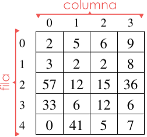
- Como vemos, filas y columnas se numeran a partir del
0.
Siguiendo el ejemplo de los puntos anteriores, si se quisiera extender el tratamiento el estudio de la pluviosidad, para abarcar no solo los días de un mes sino los de todo un año, se podría definir, por ejemplo, un array de 366 elementos, que mantuviera de forma correlativa los datos de pluviosidad de una zona día a día. Con ello, por ejemplo, el dato correspondiente al día 3 de febrero ocuparía la posición 34 del array, mientras que el correspondiente al 2 de julio ocuparía el 184.
Una aproximación más conveniente para la representación de estos datos consistiría en utilizar una matriz con 12 filas (una por mes) y 31 columnas (una por cada día del mes). Esto permitiría una descripción más ajustada a la realidad y, sobre todo, simplificaría los cálculos de la posición real de cada día en la estructura de datos. El elemento [0][3] correspondería, por ejemplo, a las lluvias del 4 de enero.
Matrices en Java
Matriz ó Array?
En Java, una matriz es, en realidad un array en el que cada componente es, a su vez, un array. Dicho de otra manera, una matriz de enteros es un array de arrays de enteros.
Esto, que no es igual en otros lenguajes de programación, tiene ciertas consecuencias en la declaración, creación y uso de las matrices en Java:
-
Una matriz, en Java, puede tener distinto número de elementos en cada fila.
-
La creación de la matriz se puede hacer en un solo paso o fila por fila.
-
Si
mes una matriz de enteros...
_m[i][j]es el entero de la filai, columnaj.
_m[i]es un array de enteros.
_m.lengthes el número de filas dem.
_m[i].lengthes el número de columnas de la filai. -
Podríamos dibujar la matriz
mdel ejemplo anterior de una forma más cercana a cómo Java las representa internamente:
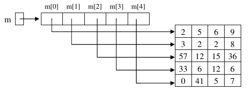
Declaración de matrices
El código siguiente declara una matriz (array bidimensional) de elementos de tipo double, y la crea para que tenga 5 filas y 4 columnas (matriz de 5x4):
double m1[][] = new double[5][4];La siguiente declaración es equivalente a la anterior aunque en la práctica es menos utilizada a no ser que queramos que cada fila tenga un número distinto de elementos:
double m2[][] = new double [5][];
m2[0] = new double[4];
m2[1] = new double[4];
m2[2] = new double[4];
m2[3] = new double[4];
m2[4] = new double[4];Es posible inicializar cada uno de los subarrays con un tamaño diferente (aunque el tipo base elemental debe ser siempre el mismo para todos los componentes). Por ejemplo:
double m3[][] = new double [5][];
m3[0] = new double[3];
m3[1] = new double[4];
m3[2] = new double[14];
m3[3] = new double[10];
m3[4] = new double[9];Inicialización
La forma de inicializar una matriz de enteros de, por ejemplo [4][3], sería:
int m4[][] = {
{7,2,4},
{8,2,5},
{9,4,3},
{1,2,4}
};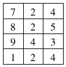
Recorrido
El recorrido se hace de forma similar al de un array aunque, dado que hay dos subíndices, será necesario utilizar dos bucles anidados: uno que se ocupe de recorrer las filas y otro que se ocupe de recorrer las columnas.
El siguiente fragmento de código recorre una matriz m4 para imprimir sus elementos uno a uno.
//recorrido por filas
System.out.println("\nRecorrido por filas: ");
for (int f = 0; f < m4.length; f++) {
for (int c = 0; c < m4[f].length; c++) {
System.out.print(m4[f][c] + " ");
}
System.out.println("");
}//Recorrido por filas:
7 2 4
8 2 5
9 4 3
1 2 4 El recorrido se ha hecho por filas, es decir, se imprimen todos los elementos de una fila y luego se pasa a la siguiente. Como habíamos indicado anteriormente, m.length representa el número de filas de m, mientras que m[i].length el número de columnas de la fila i.
También es posible hacer el recorrido por columnas: imprimir la columna 0, luego la 1, etc:
System.out.println("\nRecorrido por columnas: ");
int numFilas = m4.length;
int numColumnas = m4[0].length;
for (int c = 0; c < numColumnas; c++) {
for (int f = 0; f < numFilas; f++) {
System.out.print(m4[f][c] + " ");
}
System.out.println("");
}//Recorrido por columnas:
7 8 9 1
2 2 4 2
4 5 3 4o, directamente ...
System.out.println("\nRecorrido por columnas versión 2: ");
for (int c = 0; c < m4[0].length; c++) {
for (int f = 0; f < m4.length; f++) {
System.out.print(m4[f][c] + " ");
}
System.out.println("");
}//Recorrido por columnas versión 2:
7 8 9 1
2 2 4 2
4 5 3 4En este caso, para un funcionamiento correcto del recorrido sería necesario que todas las columnas tuvieran igual número de elementos, pues en el bucle externo, se toma como referencia para el número de columnas la longitud de m[0], es decir el número de elementos de la primera fila.
Ejemplo completo de Arrays y sus recorridos
Arrays multidimensionales
En el punto anterior hemos visto que podemos definir arrays cuyos elementos son a la vez arrays, obteniendo una estructura de datos a la que se accede mediante dos subíndices, que hemos llamado arrays bidimensionales o matrices.
Este anidamiento de estructuras se puede generalizar, de forma que podríamos construir arrays de más de dos dimensiones. En realidad Java no pone límite al número de subíndices de un array. Podríamos hacer declaraciones como las siguientes:
//Notas de 10 alum. en 5 asign. en 3 eval.
int notas[][][] = new int[10][5][3];
//El alumno 2, para la asignatura 3 de la primera evaluación ha sacado un 5
notas[2][3][1]=5;
double w[][][][][] = new double [2][7][10][4][10];Arrays con más de 3 dimensiones
Sin embargo, encontrar ejemplos en los que sean necesarios arrays de más de tres dimensiones es bastante raro, y aún cuando los encontramos solemos utilizar arrays de uno o dos subíndices porque nos resulta menos complejo manejarlos.
3.2.4 La librería Arrays
La librería Arrays en Java pertenece al paquete java.util y proporciona un conjunto de métodos estáticos diseñados para facilitar el trabajo con arreglos. Esta clase permite realizar operaciones comunes de forma eficiente, como ordenar, buscar, rellenar y comparar arrays, así como convertirlos en representaciones de texto.
Gracias a Arrays, muchas tareas que antes requerían bucles y lógica adicional se pueden realizar de manera más directa y clara.
Además, Arrays ofrece soporte para la manipulación de arrays multidimensionales, permitiendo trabajar con matrices complejas de forma más sencilla y segura. Su uso contribuye a que el código sea más legible y menos propenso a errores, convirtiéndose en una herramienta fundamental para cualquier programador que necesite manejar colecciones de datos lineales o tabulares en Java.
Algunas de las funciones más útiles son:
a) toString
Convierte un array en una representación de cadena legible.
import java.util.Arrays;
public class EjemploToString {
public static void main(String[] args) {
int[] numeros = {1, 2, 3, 4};
System.out.println(Arrays.toString(numeros));
}
}[1, 2, 3, 4]b) sort
Ordena los elementos de un array en orden ascendente.
import java.util.Arrays;
public class EjemploSort {
public static void main(String[] args) {
int[] numeros = {4, 2, 1, 3};
Arrays.sort(numeros);
System.out.println(Arrays.toString(numeros));
}
}[1, 2, 3, 4]c) equals
Comprueba si dos arrays son iguales elemento por elemento.
import java.util.Arrays;
public class EjemploEquals {
public static void main(String[] args) {
int[] a = {1, 2, 3};
int[] b = {1, 2, 3};
System.out.println(Arrays.equals(a, b));
}
}trued) binarySearch
Busca un elemento en un array ordenado y devuelve su índice.
import java.util.Arrays;
public class EjemploBinarySearch {
public static void main(String[] args) {
int[] numeros = {1, 3, 5, 7, 9};
int indice = Arrays.binarySearch(numeros, 5);
System.out.println(indice);
}
}2e) fill
Rellena un array completo o un rango con un valor específico.
import java.util.Arrays;
public class EjemploFill {
public static void main(String[] args) {
int[] numeros = new int[5];
Arrays.fill(numeros, 7);
System.out.println(Arrays.toString(numeros));
}
}[7, 7, 7, 7, 7]f) copyOf
Copia un array en otro array de tamaño determinado.
import java.util.Arrays;
public class EjemploCopyOf {
public static void main(String[] args) {
int[] original = {1, 2, 3};
int[] copia = Arrays.copyOf(original, 5);
System.out.println(Arrays.toString(copia));
}
}[1, 2, 3, 0, 0]d) copyOfRange
Copia un rango de elementos de un array en un nuevo array.
import java.util.Arrays;
public class EjemploCopyOfRange {
public static void main(String[] args) {
int[] original = {1, 2, 3, 4, 5};
int[] rango = Arrays.copyOfRange(original, 1, 4); // de la posición 1 a la 3
System.out.println(Arrays.toString(rango));
}
}[2, 3, 4]Parámetros de la función
En copyOfRange, los números indican el rango de posiciones del array que se quiere copiar.
Arrays.copyOfRange(array, desde, hasta);desde→ índice inicial incluidohasta→ índice final excluido (no se copia).
Entonces, se copian los números:
desde ≤ índice < hasta3.2.5 La librería ArrayList
1. Listas
¿En qué se diferencia una lista de un conjunto? Las listas son elementos de programación un poco más avanzados que los conjuntos. Su ventaja es que amplían el conjunto de operaciones de las colecciones añadiendo operaciones extra. Veamos algunas de ellas:
- Sí pueden almacenar duplicados. Si no queremos duplicados, hay que verificar manualmente que el elemento no esté en la lista antes de su inserción.
- Acceso posicional. Podemos acceder a un elemento indicando su posición en la lista.
- Búsqueda. Es posible buscar elementos en la lista y obtener su posición. En los conjuntos, al ser colecciones sin aportar nada nuevo, solo se podía comprobar si un conjunto contenía o no un elemento, retornando verdadero o falso. Las listas mejoran este aspecto.
- Extracción de sublistas. Es posible obtener una lista que contenga solo una parte de los elementos de forma muy sencilla.
En Java, para las listas se dispone de una interfaz llamada java.util.List, y dos implementaciones (java.util.LinkedList y java.util.ArrayList), con diferencias significativas entre ellas. Los métodos de la interfaz List, que obviamente estarán en todas las implementaciones, y que permiten las operaciones anteriores son:
| método | descripción |
|---|---|
E get(int index) |
el método get permite obtener un elemento partiendo de su posición (index). |
E set(int index, E element) |
el método set permite cambiar el elemento almacenado en una posición de la lista (index), por otro (element). |
void add(int index, E element) |
se añade otra versión del método add, en la cual se puede insertar un elemento (element) en la lista en una posición concreta (index), desplazando los existentes. |
E remove(int index) |
se añade otra versión del método remove, esta versión permite eliminar un elemento indicando su posición en la lista (desplazando los existentes a izquierda). |
boolean addAll(int index, Collection<? extends E> c) |
se añade otra versión del método addAll , que permite insertar una colección pasada por parámetro en una posición de la lista, desplazando el resto de elementos. |
int indexOf(Object o) |
el método indexOf permite conocer la posición (índice) de un elemento, si dicho elemento no está en la lista retornará ‐1. |
int lastIndexOf(Object o) |
el método lastIndexOf nos permite obtener la última ocurrencia del objeto en la lista (dado que la lista sí puede almacenar duplicados). |
List<E> subList(int from, int to) |
el método subList genera una sublista (una vista parcial de la lista) con los elementos comprendidos entre la posición inicial (incluida) y la posición final (no incluida). |
A tener en cuenta sobre List
Ten en cuenta que los elementos de una lista empiezan a numerarse por 0. Es decir, que el primer elemento de la lista es el 0.
Ten en cuenta también que List es una interfaz genérica, por lo que <E> corresponde con el tipo base usado como parámetro genérico al crear la lista.
1.1. Uso
Y, ¿cómo se usan las listas? Pues para usar una lista haremos uso de sus implementaciones LinkedList y ArrayList. Veamos un ejemplo de su uso y después obtendrás respuesta a esta pregunta.
Ejemplo 2.08: uso de clase ArrayList
Antes de nada no olvides importar la clase java.util.ArrayList.
En este ejemplo se usan los métodos de acceso posicional a la lista:
//declaració
ArrayList<Integer> al = new ArrayList<>();
ArrayList<Integer> al2 = new ArrayList<>();
ArrayList<Empleado> em = new ArrayList<>();
ArrayList<String> sr = new ArrayList<>();
//Afegir elements
al.add(10);
al.add(11);
al2.add(8);
al2.add(9);
em.add(new Empleado("33445666V", "Pepe", "Martínez", "mañana", 1700));
sr.add("Hola");
sr.add("Adios");
//Acceder a elemento
em.get(0);
//buscar elemento
int indice = al.indexOf(11);
int indice2 = sr.indexOf("Hola");
//reemplazar elemento (buscado arriba)
al.set(indice, 15);
sr.set(indice2, "ey");
//Recorrer array --> foreach
for (String string : sr) {
System.out.println(sr);
}
//Recorrer array --> for
for (int i = 0; i < al.size(); i++) {
System.out.println(al.get(i));
}
//Combinar dos Arrays
al.addAll(0, al2);
//Eliminar elemento
al.remove(0);
sr.removeFirst();
em.removeLast();
al.clear();Ejemplo 2.11: uso de LinkedList y ArrayList
package UT07.P2_Lists;
import java.util.ArrayList;
import java.util.Collection;
import java.util.LinkedList;
public class EjemploListas2 {
// método para imprimir colecciones:
private static void imprimirColeccion(Collection<?> c) {
for (Object elemento : c) {
System.out.print(elemento.toString() + " ");
}
System.out.println("");
}
public static void main(String[] args) {
LinkedList<Integer> ll = new LinkedList<>(); //declaración+creación LinkedList
ll.add(1); //añade un elemento al final de la lista
ll.add(3); //añade otro elemento al final de la lista
ll.add(1, 2); //añade en la posición 1 el elemento 2
ll.add(t.get(1) + ll.get(2)); //suma contendio de posición 1 y 2, y agrega al final
ll.remove(0); //elimina el primer elementos de la lista
imprimirColeccion(ll); //2 3 5
ArrayList<Integer> al = new ArrayList<>(); //declaración+creación ArrayList
al.add(10);
al.add(11); //añadimos dos elementos a la lista.
al.set(al.indexOf(11), 12); //sustituimos el 11 por el 12, primero lo buscamos y luego lo reemplazamos.
al.addAll(0, t.subList(1, t.size()));
imprimirColeccion(al); //3 5 10 12
al.subList(0, 2).clear();
imprimirColeccion(al); //10 12
}
}1.2. LinkedList y ArrayList
¿Y en qué se diferencia un LinkedList de un ArrayList ?
🔗 LinkedList
Utilizan listas doblemente enlazadas, que son listas enlazadas (como se vió en un apartado anterior), pero que permiten ir hacia atrás en la lista de elementos. Los elementos de la lista se encapsulan en los llamados nodos.
Los nodos van enlazados unos a otros para no perder el orden y no limitar el tamaño de almacenamiento. Tener un doble enlace significa que en cada nodo se almacena la información de cuál es el siguiente nodo y además, de cuál es el nodo anterior. Si un nodo no tiene nodo siguiente o nodo anterior, se almacena null(o nulo) para ambos casos.
🔢 ArrayList
Estos se implementan utilizando arrays que se van redimensionando conforme se necesita más espacio o menos. La redimensión es transparente a nosotros, no nos enteramos cuándo se produce, pero eso redunda en una diferencia de rendimiento notable dependiendo del uso. Los ArrayList son más rápidos en cuanto a acceso a los elementos, acceder a un elemento según su posición es más rápido en un array que en una lista doblemente enlazada (hay que recorrer la lista). En cambio, eliminar un elemento implica muchas más operaciones en un array que en una lista enlazada de cualquier tipo.
¿Y esto qué quiere decir? Que si se van a realizar muchas operaciones de eliminación de elementos sobre la lista, conviene usar una lista enlazada (LinkedList), pero si no se van a realizar muchas eliminaciones, sino que solamente se van a insertar y consultar elementos por posición, conviene usar una lista basada en arrays redimensionados (ArrayList ).
| Característica | 🔗 LinkedList | 🔢 ArrayList |
|---|---|---|
| Estructura | Lista doblemente enlazada (nodos con referencias al anterior y siguiente). | Array redimensionable (elementos contiguos en memoria). |
| Acceso a elementos | Lento (O(n)), hay que recorrer la lista. | Rápido (O(1)), acceso directo por índice. |
| Inserción/Eliminación | Rápida (O(1) si se tiene el nodo, O(n) si hay que buscarlo). | Lenta (O(n)), ya que hay que desplazar elementos. |
| Uso de memoria | Más memoria por referencias adicionales (next y prev). |
Menos memoria, solo almacena los datos. |
| Redimensionamiento | No necesita, se expande dinámicamente sin copias. | Puede requerir redimensionamiento y copia de datos. |
| Ideal para... | Muchas inserciones/eliminaciones en el medio de la lista. | Muchas consultas y acceso rápido a elementos por índice. |
| Interfaces adicionales | Implementa Queue y Deque (uso como pila o cola). |
No implementa Queue ni Deque. |
LinkedList tiene otras ventajas que nos puede llevar a su uso. Implementa las interfaces java.util.Queue y java.util.Deque. Dichas interfaces permiten hacer uso de las listas como si fueran una cola de prioridad o una pila, respectivamente.
1.3. A tener en cuenta
No es lo mismo usar las colecciones (listas y conjuntos) con objetos inmutables (Strings, Integer, etc.) que con objetos mutables. Los objetos inmutables no pueden ser modificados después de su creación, por lo que cuando se incorporan a la lista, a través de los métodos add , se pasan por copia (es decir, se realiza una copia de los mismos). En cambio los objetos mutables (como las clases que tú puedes crear), no se copian, y eso puede producir efectos no deseados.
Imagínate la siguiente clase, que contiene un número:
class Test {
public Integer num;
Test (int num) {
this.num = new Integer(num);
}
}La clase de antes es mutable, por lo que no se pasa por copia a la lista. Ahora imagina el siguiente código en el que se crea una lista que usa este tipo de objeto, y en el que se insertan dos objetos:
Test p1 = new Test(11); // se crea un objeto Test donde el entero que contiene vale 11.
Test p2 = new Test(12); // se crea otro objeto Test donde el entero que contiene vale 12.
LinkedList<Test> lista = new LinkedList<Test>(); // creamos una lista enlazada para objetos tipo Test.
lista.add(p1); // añadimos el primero objeto test.
lista.add(p2); // añadimos el segundo objeto test.
for (Test p:lista){
System.out.println(p.num); // mostramos la lista de objetos.
}¿Qué mostraría por pantalla el código anterior? Simplemente mostraría los números 11 y 12.
Ahora bien, ¿qué pasa si modificamos el valor de uno de los números de los objetos test? ¿Qué se mostrará al ejecutar el siguiente código?
p1.num = 44;
for (Test p:lista){
System.out.println(p.num);
}El resultado de ejecutar el código anterior es que se muestran los números 44 y 12. El número ha sido modificado y no hemos tenido que volver a insertar el elemento en la lista para que en la lista se cambie también. Esto es porque en la lista no se almacena una copia del objeto Test, sino un apuntador a dicho objeto (solo hay una copia del objeto a la que se hace referencia desde distintos lugares).
Cita
Controlar la complejidad es la esencia de la programación. Brian Kernighan
Ejemplo 2.13: uso de ArrayList
Tenemos la clase Producto con:
- Dos atributos: nombre (
String) y cantidad (int). - Un constructor con parámetros.
- Un constructor sin parámetros.
- Métodos
getysetasociados a los atributos.
package UT07.P2_Lists;
public class Producto {
//Atributos
private String nombre;
private int cantidad;
//Métodos
//Constructor con parámetros donde asignamos el valor dado a los atributos
public Producto(String nombre, int cantidad) {
this.nombre = nombre;
this.cantidad = cantidad;
}
//Constructor sin parámetros donde inicializamos los atributos
public Producto() {
//La palabra reservada null se utiliza para inicializar los objetos,
//indicando que el puntero del objeto no apunta a ninguna dirección
//de memoria. No hay que olvidar que String es una clase.
this.nombre = null;
this.cantidad = 0;
}
//Metodo get y set
public String getNombre() {
return nombre;
}
public void setNombre(String nombre) {
this.nombre = nombre;
}
public int getCantidad() {
return cantidad;
}
public void setCantidad(int cantidad) {
this.cantidad = cantidad;
}
}En el programa principal creamos una lista de productos y realizamos operaciones sobre ella:
package UT07.P2_Lists;
import java.util.ArrayList;
public class EjemploListas {
public static void main(String[] args) {
//Definimos 5 instancias de la clase Producto
Producto p1 = new Producto("Pan", 6);
Producto p2 = new Producto("Leche", 2);
Producto p3 = new Producto("Manzanas", 5);
Producto p4 = new Producto("Brocoli", 2);
Producto p5 = new Producto("Carne", 2);
//Definir un ArrayList
ArrayList<Producto> lista = new ArrayList<>();
//Colocar instancias de producto en ArrayList
lista.add(p1);
lista.add(p2);
lista.add(p3);
lista.add(p4);
//Añadimos "Carne" en la posición 1 de la lista
lista.add(1, p5);
//Añadimos "Carne" en la última posición
lista.add(p5);
//Imprimir el contenido del ArrayList
System.out.println(" - Lista con " + lista.size() + " elementos");
for (Producto p : lista) {
System.out.println(p.getNombre() + " : " + p.getCantidad());
}
p5.setCantidad(99); //cambiamos la cantidad al producto, ¿cambiará la lista?
((Producto)lista.get(1)).setCantidad(66);
System.out.println(p5.getCantidad());
//Imprimir el contenido del ArrayList
System.out.println(" - Lista con " + lista.size() + " elementos");
for (Producto p : lista) {
System.out.println(p.getNombre() + " : " + p.getCantidad());
}
//Eliminar todos los valores del ArrayList
lista.clear();
System.out.println(" - Lista final con " + lista.size() + " elementos");
}
}3.3 Mapas
1. Mapas - conjuntos de pares [clave/valor]
¿Cómo almacenarías los datos de un diccionario? Tenemos por un lado cada palabra y por otro su significado. Para resolver este problema existen precisamente los arrays asociativos. Un tipo de array asociativo son los mapas o diccionarios, que permiten almacenar pares de valores conocidos como clave y valor. La clave se utiliza para acceder al valor, como una entrada de un diccionario permite acceder a su definición.
En Java existe la interfaz java.util.Map que define los métodos que deben tener los mapas, y existen tres implementaciones principales de dicha interfaz: 🔀 java.util.HashMap, 🌳 java.util.TreeMap y 🔗 java.util.LinkedHashMap. ¿Te suenan? Claro que sí. Cada una de ellas, respectivamente, tiene características similares a HashSet , TreeSet y LinkedHashSet , tanto en funcionamiento interno como en rendimiento.
Los mapas utilizan clases genéricas para dar extensibilidad y flexibilidad, y permiten definir un tipo base para la clave, y otro tipo diferente para el valor. Veamos un ejemplo de cómo crear un mapa, que es extensible a los otros dos tipos de mapas:
HashMap<String,Integer> t = new HashMap<>();
TreeMap<String, Integer> tree = new TreeMap<>();
LinkedHashMap<String, Integer> linked = new LinkedHashMap<>();El mapa anterior permite usar cadenas como llaves y almacenar de forma asociada a cada llave, un número entero. Veamos los métodos principales de la interfaz Map, disponibles en todas las implementaciones. En los ejemplos, V es el tipo base usado para el valor (Value) y K el tipo base usado para la llave (Key):
| Método. | Descripción. |
|---|---|
V put(k key, v value); |
Inserta un par de objetos llave (key) y valor (value) en el mapa. Si la llave ya existe en el mapa, entonces retornará el valor asociado que tenía antes, si la llave no existía, entonces retornará null. |
V get(Object key); |
Obtiene el valor asociado a una llave ya almacenada en el mapa. Si no existe la llave, retornará null. |
V remove(Object key); |
Elimina la llave y el valor asociado. Retorna el valor asociado a la llave, por si lo queremos utilizar para algo, o null, si la llave no existe. |
boolean containsKey(Object key); |
Retornará true si el mapa tiene almacenada la llave pasada por parámetro, false en cualquier otro caso. |
boolean containsValue(Object value); |
Retornará true si el mapa tiene almacenado el valor pasado por parámetro, false en cualquier otro caso. |
int size(); |
Retornará el número de pares llave y valor almacenado en el mapa. |
boolean isEmpty(); |
Retornará true si el mapa está vacío, false en cualquier otro caso. |
void clear(); |
Vacía el mapa. |
🔀 java.util.HashMap
-
Definición: Colección que almacena pares clave → valor sin mantener ningun orden en concreto.
-
Características:
- Las claves deben ser únicas, los valores pueden ser duplicados.
- Permite una clave null y varios valores null.
- Ideal cuando el orden no importa.
Ejemplo 2.14: uso de HashMap
package UT07.P2_Maps;
import java.util.HashMap;
public class EjemploMaps {
public static void main(String[] args) {
HashMap<String, Integer> hm = new HashMap<>();
//Insertamos un solo elemento A con valor 1
hm.put("A", 1);
//Busqueda por clave
if (hm.containsKey("A")) {
System.out.printf("Contiene la clave A. Su valor es: %d\n", hs.get("A"));
}
//Busqueda por valor
if (hm.containsValue(0)) {
System.out.println("Contiene el valor 0");
}
//Eliminar el elemento con clave A
hm.remove("A");
//Ahora añadimos varios elementos para imprimirlos
hm.put("A", 1);
hm.put("E", 12);
hm.put("I", 15);
hm.put("O", 0);
hm.put("U", 0);
//Recorremos el mapa y lo imprimimos
for (String elemento : hm.keySet()) {
System.out.printf( "Clave: %s. Valor: %d\n",
elemento,
hm.get(elemenoto) );
}
}
}🌳 java.util.TreeMap
-
Definición: Implementa un mapa ordenado basado en un árbol rojo-negro. Ordena automáticamente las caves según su orden natural (alfabético o númerico).
-
Características:
- Claves únicas, valores duplicados permitidos.
- No permite clave null, sí permite valores null.
- Ideal cuando necesitas que las claves estén ordenadas.
Ejemplo 2.15: uso de TreeMap
import java.util.TreeMap;
public class EjemploTreeMapDescending {
public static void main(String[] args) {
// Creamos un TreeMap (orden natural: ascendente)
TreeMap<String, Integer> tm = new TreeMap<>();
tm.put("Perro", 5);
tm.put("Gato", 3);
tm.put("Loro", 7);
tm.put("Elefante", 2);
// Mostrar TreeMap ascendente
System.out.println("TreeMap ascendente (orden natural):");
for (String clave : tm.keySet()) {
System.out.println("Clave: " + clave + ", Valor: " + tm.get(clave));
}
// Usamos descendingMap() para recorrer en orden descendente
System.out.println("\nTreeMap descendente:");
for (String clave : tm.descendingMap().keySet()) {
System.out.println("Clave: " + clave + ", Valor: " + tm.get(clave));
}
}
}🔗 java.util.LinkedHashMap
-
Definición: Similar a HashMap, pero mantiene el orden de inserción de las entradas.
-
Características:
- Claves únicas, valores duplicados permitidos.
- Permite claves null y valores null.
- Ideal cuando quieres iterar en el orden en que agregaste los elementos.
Ejemplo 2.16: uso de LinkedHashMap
import java.util.LinkedHashMap;
public class EjemploLinkedHashMap {
public static void main(String[] args) {
LinkedHashMap<String, Integer> lhm = new LinkedHashMap<>();
lhm.put("Perro", 5);
lhm.put("Gato", 3);
lhm.put("Loro", 7);
System.out.println("LinkedHashMap (orden de inserción):");
for (String clave : lhm.keySet()) {
System.out.println("Clave: " + clave + ", Valor: " + lhm.get(clave));
}
}
}3.4 Recursividad
A la hora de crear programas complejos, uno de los aspectos que diferencia el buen programador del aficionado es su capacidad de hacer algoritmos eficientes. O sea, que sean capaces de resolver el problema planteado en el mínimo de pasos. En el caso de un programa, esto significa la necesidad de ejecutar el mínimo número de instrucciones posible. Ciertamente, si el resultado tiene que ser exactamente el mismo, siempre será mejor hacer una tarea en 10 pasos que en 20, intentando evitar pasos que en realidad son innecesarios. Por lo tanto, la etapa de diseño de un algoritmo es bastante importante y hay que pensar bien una estrategia eficiente. Ahora bien, normalmente, los algoritmos más eficientes también son más difíciles de pensar y codificar, ya que no siempre son evidentes.
Aplicación de la recursividad
A menudo encontraréis que explicar de palabra la idea general de una estrategia puede ser sencillo, pero traducirla a instrucciones de Java ya no lo es tanto.
Retomamos ahora el caso de la búsqueda dicotómica o binaria, dado que hay que ir repitiendo unos pasos en sucesivas iteraciones, está más o menos claro que el problema planteado para realizar búsquedas eficientes se basa en una estructura de repetición. Pero no se recorren todos los elementos y el índice no se incrementa uno a uno, sino que se va cambiando a valores muy diferentes para cada iteración. No es un caso evidente. Precisamente, este ejemplo no se ha elegido al azar, ya que es un caso en el que os puede ir bien aplicar un nuevo concepto que permite facilitar la definición de algoritmos complejos donde hay repeticiones.
Definición
La recursividad es una forma de describir un proceso para resolver un problema de manera que, a lo largo de esta descripción, se usa el proceso mismo que se está describiendo, pero aplicado a un caso más simple.
De hecho, tal vez sin darse cuenta de ello, ya se ha usado recursividad para describir cómo resolver un problema. Para ver qué significa exactamente la definición formal apenas descrita, se repetirá el texto en cuestión, pero remarcando el aspecto recursivo de la descripción:
"Generalmente, la mejor estrategia para adivinar un número secreto entre 0 y N sería primero probar N/2. Si no se ha acertado, entonces si el número secreto es más alto se intenta adivinar entre (N/2 + 1) y N. Si era más bajo, se intenta adivinar el valor entre 0 y N-1. Para cada caso, se vuelve a probar el valor que hay en el centro del nuevo intervalo. Y así sucesivamente, hasta adivinarlo."
O sea, el proceso de adivinar un número se basa en el proceso de intentar adivinar un número! Esto parece hacer trampas, ya que es como usar la misma palabra que se quiere definir a su propia definición. Pero fíjate en un detalle muy importante; los nuevos usos del proceso de "adivinar" son casos más simples, ya que primero se adivina entre N valores posibles, luego entre N/2 valores, después entre N/4, etc. Este hecho no es casual y de él depende poder definir un proceso recursivo de manera correcta.
Otro ejemplo de recursividad en Informática es la definición de las iniciales del sistema operativo GNU quieren decir "GNU is Not Unix"
Implementación de la recursividad
La implementación de la recursividad dentro del código fuente de un programa se realiza a nivel de método.
Otra definición
Un método recursivo es aquel que, dentro de su bloque de instrucciones, tiene alguna invocación a él mismo.
El bloque de código de un método recursivo siempre se basa en una estructura de selección múltiple, donde cada rama es de alguno de los dos casos posibles descritos a continuación.
- Por un lado, en el caso base, que contiene un bloque instrucciones dentro de las cuales no hay ninguna llamada al método mismo. Se ejecuta cuando se considera que, a partir de los parámetros de entrada, el problema ya es suficientemente simple como para ser resuelto directamente.
En el caso de la búsqueda binaria, sería cuando la posición intermedia es exactamente el valor que se está buscando, o bien cuando ya se puede decidir que el elemento a buscar no existe.
- Por otra parte, existe el caso recursivo, que contiene un bloque de instrucciones dentro de las cuales hay una llamada al método mismo, dado que se considera que aún no se puede resolver el problema fácilmente. Ahora bien, los valores usados como parámetros de esta nueva llamada deben ser diferentes a los originales. Concretamente, serán unos valores que tiendan a acercarse al caso base.
En el caso de la búsqueda binaria, se corresponde a la búsqueda sobre la mitad de los valores originales, ya sea hacia la mitad inferior o superior. Este es un caso en el que el intervalo de posiciones donde se hará la nueva búsqueda se va acercando al caso base, ya que tarde o temprano, llamada tras llamada, el espacio de búsqueda se irá reduciendo hasta que, o bien se encuentra el elemento, o queda claro que no está.
Metodología de los casos recursivos
Dentro de la estructura de selección siempre debe haber, al menos, un caso base y uno recursivo.
Normalmente, los algoritmos recursivos más sencillos tienen uno de cada.
Es imprescindible que los casos recursivos siempre garanticen que sucesivas llamadas van aproximando los valores de los parámetros de entrada a algún caso base, ya que, de lo contrario, el programa nunca termina y se produce el mismo efecto que en un bucle infinito.
Cálculo recursivo de la operación factorial
Como ejemplo del funcionamiento de un método recursivo, se empezará con un caso sencillo. Se trata del cálculo de la llamada operación factorial de un valor entero positivo. Esta es unaria y se expresa con el operador exclamación (por ejemplo, 4!, 20!, 3!). El resultado de esta operación es la multiplicación de todos los valores desde el 1 hasta el indicado (7! = 1 * 2 * 3 * 4 * 5 * 6 * 7). Normalmente, la definición matemática de esta operación se hace de manera recursiva:
- caso base:
0! = 1 - caso recursivo:
n! = N * (n - 1)!
Así pues, tened en cuenta que el caso recursivo realiza un cálculo que depende de usar la propia definición de la operación, pero cuando lo hace es con un nuevo valor inferior al original, por lo que se garantiza que, en algún momento, se hará una llamada recursiva que desembocará en el caso base. Cuando esto ocurra, la cadena de llamadas recursivas acabará. Una manera de ver esto es desarrollando paso a paso esta definición:
| llamada | implementación | |
|---|---|---|
| 1ª llamada) | 4! = 4 * (4 - 1)! | 4 * (3)! |
| 2ª llamada) | 4 * 3! = 4 * (3 * (3-1))! | 4 * 3 * (2)! |
| 3ª llamada) | 4 * 3 * 2! = 4 * 3 * (2 * (2-1))! | 4 * 3 * 2 * (1)! |
| 4ª llamada) | 4 * 3 * 2 * 1! = 4 * 3 * 2 * (1 * (1 - 1))! | 4 * 3 * 2 * 1 * (0)! |
| retorno) | 4 * 3 * 2 * 1 * 0! = 4 * 3 * 2 * 1 * (1) | 24 |
En este código se han añadido algunas sentencias para escribir información por pantalla, de forma que se vea con más detalle cómo funciona un método recursivo. Veréis que, inicialmente, se llevan a cabo una serie de invocaciones del caso recursivo, uno tras otro, hasta que se llega a una llamada que ejecuta el caso base. Es a partir de entonces cuando, a medida que se van ejecutando las sentencias return del caso recursivo, realmente se va acumulando el cálculo. Otra forma de verlo es depurando el programa.
Su implementación en Java sería la siguiente:
package UT04;
public class Recursividad {
public static void main(String[] args) {
//factorial
System.out.println("FACTORIAL DE 4: " + factorial(4));
[...]
}
/*
* Método recursivo que calcula el factorial
*/
public static int factorial(int n) {
if (n == 0) {
//Caso base: Se sabe el resultat directamente
System.out.println("Caso base: n es igual a 0");
return 1;
} else {
//Caso recursivo: Para calcularlo hay que invocar al método recursivo
//El valor del nuevo parámetro de entradad se ha de modificar, de
//manera que se vaya acercando al caso base
System.out.println("Caso recursivo " + n + "!: Se invoca al factorial(" + (n - 1) + ")");
int res = n * factorial(n - 1);
System.out.println("-> después de " + n + "! cuyo resultado es: " + res);
return res;
}
}
// [...]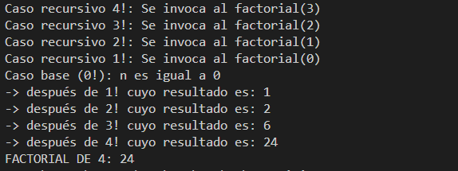
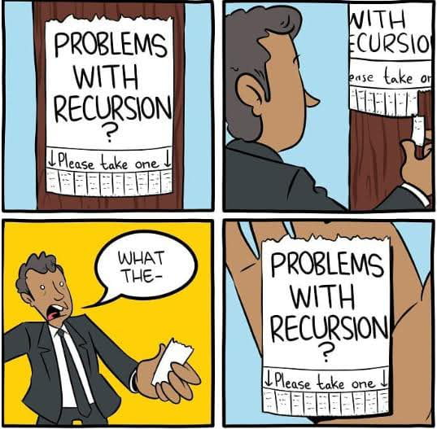
Cálculo recursivo de la búsqueda dicotómica
A continuación se muestra el código del algoritmo recursivo de búsqueda dicotómica o binaria sobre un array. Observad atentamente los comentarios, los cuales identifican los casos base y recursivos. En este caso, hay más de un caso base y recursivo.
package UT04;
public class RecursividadBusquedaBinaria {
public static void main(String[] args) {
// [...]
// busqueda binaria recursiva
int array[] = {2, 4, 6, 8, 10, 12, 14, 16, 18, 20};
int buscaDieciocho = BusquedaBinaria(array, 0, array.length - 1, 18);
System.out.println("Busqueda del 18: " + buscaDieciocho);
int buscaCinco = BusquedaBinaria(array, 0, array.length - 1, 5);
System.out.println("Busqueda del 5: " + buscaCinco);
// [...]
}
// [...]
public static int BusquedaBinaria(int array[], int izq, int der, int valor) {
if (izq > der) {
// Caso base: No se ha encontrado el valor
return -1;
}
// Se calcula la posición central entre los dos índices de búsqueda
int medio = (izq + der) / 2;
if (array[medio] == valor){
// caso base: Es igual, por tanto, se ha encontrado
return medio;
} else if (array[medio] > valor) {
// Caso recursivo: Si el valor es menor que la posición que se ha
// consultado, entonces hay que seguir buscando por la parte
// "derecha" del array
return BusquedaBinaria(array, izq, medio - 1, valor);
} else {
// Caso recursivo: Si el valor es mayor que la posición que se ha
// consultado, entonces hay que seguir buscando por la parte
// "izquierda" del array
return BusquedaBinaria(array, medio + 1, der, valor);
} else {
}
}
// [...]
}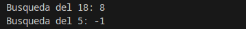
Prácticamente cualquier problema que se puede resolver con un algoritmo recursivo también se puede resolver con sentencias de estructuras de repetición (de manera iterativa). Pero muy a menudo su implementación será mucho menos evidente y las interacciones entre instrucciones bastante más complejas que la opción recursiva (una vez se entiende este concepto, claro).
Algoritmo ya existente
Más allá de ser un ejercicio de algorítmica, resultaría mucho más adecuado utilizar la versión ya incorporada en la librería estándar del lenguaje de programación Java:
import java.util.Arrays;
[...]
public int busquedaBinaria (int numeros[], int numero) {
return Arrays.binarySearch(numeros, numero);
}Desbordamiento de pila (stack overflow)
Las versiones recursivas de muchas rutinas pueden ejecutarse un poco más lentamente que sus equivalentes iterativos debido a la sobrecarga adicional de las llamadas a métodos adicionales. Demasiadas llamadas recursivas a un método podrían causar un desbordamiento de la pila.
Como el almacenamiento para los parámetros y las variables locales están en la pila y cada llamada nueva crea una nueva copia de estas variables, es posible que la pila se haya agotado. Si esto ocurre, el sistema de tiempo de ejecución (run-time) de Java causará una excepción. Sin embargo, probablemente no tendrás que preocuparte por esto a menos que una rutina recursiva se vuelva loca.
La principal ventaja de la recursividad es que algunos tipos de algoritmos se pueden implementar de forma más clara y más recursiva de lo que pueden ser iterativamente. Por ejemplo, el algoritmo de clasificación Quicksort es bastante difícil de implementar de forma iterativa. Además, algunos problemas, especialmente los relacionados con la IA, parecen prestarse a soluciones recursivas.
package UT04;
public class Recursividad {
public static void main(String[] args) {
[...]
//desbordamiento de pila
desbordamientoPila(10);
}
[...]
public static int desbordamientoPila(int n) {
// condición base incorrecta (esto provoca un desbordamiento de la pila).
if (n == 100) {
return 1;
} else {
return n * desbordamientoPila(n - 1);
}
}
}En el ejemplo anterior si se llama a desbordamientoPila(10), llamará a desbordamientoPila (9), desbordamientoPila(8), desbordamientoPila(7), etc., pero el número nunca llegará a 100. Por lo tanto, no se alcanza la condición base. Si la memoria se agota con estos métodos en la pila, provocará un error de desbordamiento de pila (java.lang.StackOverflowError).
Al escribir métodos recursivos, debe tener una instrucción condicional, como un if, en algún lugar para forzar el retorno del método sin que se ejecute la llamada recursiva. Si no lo hace, una vez que llame al método, nunca retornará. Este tipo de error es muy común cuando se trabaja con recursividad.
Ejemplo completo de recursividad
Actividades UT03
Empaquetar actividades
Empaqueta las actividades, dentro de la carpeta ut03/bloqueX
Bloque 3.0 - Arrays
Actividad 1
Crea un programa que pida al usuario el número de personas participantes en la comida de Navidad. A continuación, el programa pedirá el nombre de cada una de dichas personas.
Finalmente, saca por pantalla todos los nombres, usando la estructura foreach.
Actividad 2
Crea un programa que cree un array de 15 números generados aleatoriamente (entre el 1 y el 100).
A continuación, saca por pantalla la suma, el máximo, el mínimo, la media de los números almacenados y cuántos números pares hay.
Para generar los números aleatorios puedes usar
MathoRandom
Actividad 3
Amplia el programa anterior para que muestre también:
-
La posición (índice) en la que se han encontrado el màximo y el mínimo.
-
La suma del primer y último elemento del array.
-
El mensaje "existe 50" en caso de que el array incluya, al menos una vez, el número 50.
Actividad 4
Crea un programa que cree un array de 15 números generados aleatoriamente (entre el 1 y el 50).
A continuación, el programa pedirá un número al usuario y comprobará si está o no en el array. El proceso se repetirá hasta que el usuario consiga adivinar uno de los números del array.
Actividad 5
Crea un programa que cree un array de 15 números enteros.
Después comprueba si está ordenado de forma ascendente.
El array estará ordenado de forma ascendente si siempre se cumple que el elemento con índice
ies menor que el elemento con índicei+1.
Actividad 6
Crea un programa que pida al usuario números enteros para crear un array de 10 valores no repetidos.
Para ello, cada vez que el usuario introduzca un valor, se deberá comprobar si esté ya existe en el array. En caso de que exista, no se almacenará.
El proceso debe repetirse hasta que se consigan almacenar 10 elementos en el array
Actividad 7
Crea un programa con los siguientes métodos:
-
public static int[] invertir (int[] v): devolverá el array en orden inverso. -
public static int[] rotarDerecha (int[] v): rotará todos los elementos del array una posición a la derecha. -
public static int[] rotarIzquierda (int[] v): como el anterior, pero esta vez a la izquierda.
Pruebalos todos ellos desde el método main.
Actividad 8
Crea un método que, dados dos arrays de Strings, compruebe si todos sus elementos son iguales: public static boolean sonIguales (String[] v1, String[] v2).
Recuerda que puedes comparar dos cadenas de texto con la función
cadena1.equals(cadena2).
Actividad 9
Crea un programa que genere un array de 100 posiciones con números aleatorios entre el 1 y el 300. A continuación, se pedirá un dígito (del 0 al 9) al usuario.
El programa creará un nuevo array que almacenará aquellos números del primer array que acaben en el dígito introducido por el usuario y lo mostrará por pantalla.
Por ejemplo, si el dígito introducido es un 5, el nuevo array tendrá números acabados en 5, como 155, 205, 195, 65, 5, 15, etc.
Ayuda
Para obtener el último dígito de un número entero usa la expresión: int ultimo = numero % 10;.
Solución
import java.util.Scanner;
public class Act09 {
public static void main(String[] args) {
Scanner sc = new Scanner(System.in);
int numeros[] = new int[100];
int digito, contador=0;
//rellenar array
for (int i = 0; i < numeros.length; i++) {
numeros[i] = (int) (Math.random()*300)+1;
}
//Pedir digito
System.out.println("Introduce un digito del 0 al 9");
digito = sc.nextInt();
//*
// Contar la cantidad de números de array
// que acaban en el digito, para saber la
// longitud del nuevo array.*/
for (int num : numeros) {
if(num % 10 == digito){
contador++;
}
}
//Crear nuevo array
int solucion[] = new int[contador];
int j=0;
for (int i = 0; i < numeros.length; i++) {
if (numeros[i] % 10 == digito) {
solucion[j] = numeros[i];
j++;
}
}
//Mostrar el nuevo array
System.out.println("Números que terminan en " + digito + ": ");
for (int sol : solucion) {
System.out.print(sol + " ");
}
}
}Actividad 10
Crea un programa que pida al usuario el número de alumnos en un aula. A continuación, creará dos arrays, uno de String en el que almacenará los nombre de los alumnos, otro de double en el que almacenará las notas.
El programa pedirá al usuario el nombre y nota media de cada uno de los alumnos y los irá almacenando en el array correspondiente.
Una vez almacenados todos los datos, los sacará por pantalla:
Pepe: 5.86
Lucia: 9.32
Vicente: 7.89
Maria: 5.43
Ana: 4.5
Carlos: 8.25Actividad 11
Crea el método public static int[] seleccion (int[] v, int n) que devolverá un nuevo array con los elementos de v que sean pares y mayores que n.
Comprueba su funcionamiento desde el método main generando un array test de 100 posiciones con números aleatorios entre el 1 y el 200.
Solución
import java.util.Scanner;
public class Act11 {
public static int[] seleccion(int[] v, int n){
//Calcular número elementos nuevo array
int contador = 0;
for (int i : v) {
if ((i%2==0) && (i>n)) {
contador++;
}
}
//Crear y rellenar nuevo array
int solucion[] = new int[contador];
int j=0;
for (int i = 0; i < v.length; i++) {
if ((v[i] % 2 == 0) && (v[i] > n)) {
solucion[j] = v[i];
j++;
}
}
return solucion;
}
public static void main(String[] args) {
Scanner sc = new Scanner(System.in);
int test[] = new int[100];
for (int i = 0; i < test.length; i++) {
test[i] = (int) (Math.random()*200)+1;
}
System.out.println("Introduce un numer del 1 al 200: ");
int n = sc.nextInt();
int solucion[] = seleccion(test, n);
System.out.println("Array solución: ");
for (int sol : solucion) {
System.out.print(sol + " ");
}
}
}Actividad 12
Realizar un programa que defina un array de 10 enteros, a continuación lo inicialice con valores aleatorios (del 1 al 10) y posteriormente muestre en pantalla cada elemento del array junto con su cuadrado y su cubo.
Para mostrar los elementos se debe utilizar la estructura foreach.
Actividad 13
Crea un programa que pida al usuario el número de su DNI y calcule la letra.
Ayuda
En España, la letra del DNI se calcula a partir del número del DNI utilizando una secuencia fija de letras.
La secuencia de letras es la siguiente:
char[] letras = {'T', 'R', 'W', 'A', 'G', 'M', 'Y', 'F', 'P', 'D', 'X', 'B', 'N', 'J', 'Z', 'S', 'Q', 'V', 'H', 'L', 'C', 'K', 'E'};El cálculo se realiza de la siguiente forma:
- Se divide el número del DNI entre 23.
- Se obtiene el resto de la división (
%). - Ese resto indica la posición del array donde se encuentra la letra correspondiente.
Actividad 14
Crea una clase llamada Alumno que contenga los atributos nombre, edad, notaMedia. Incluye además, el constructor que reciba los tres atributos, los getters y setters y el método mostrarDatos() que muestre toda la información del alumno.
En el método main:
- Crea un array de tipo Alumno con capacidad para 15 alumnos.
- Pide al usuario los datos de cada uno de los alumnos e inicializa el objeto Alumno de cada posición del array.
- Recorre el array de alumnos (con
foreach) y muestra la información de cada uno de los objetos almacenados.
Solución
import java.util.*;
public class Alumno {
private String nombre;
private int edad;
private double notaMedia;
// Constructor
public Alumno(String nombre, int edad, double notaMedia) {
this.nombre = nombre;
this.edad = edad;
this.notaMedia = notaMedia;
}
// Getters
public String getNombre() {
return this.nombre;
}
public int getEdad() {
return this.edad;
}
public double getNotaMedia() {
return this.notaMedia;
}
// Setters
public void setNombre(String nombre) {
this.nombre = nombre;
}
public void setEdad(int edad) {
this.edad = edad;
}
public void setNotaMedia(double notaMedia) {
this.notaMedia = notaMedia;
}
// Método para mostrar la información del alumno
public void mostrarInfo() {
System.out.println(
"Nombre: " + this.nombre +
", Edad: " + this.edad +
", Nota media: " + this.notaMedia
);
}
public static void main(String[] args) {
Scanner sc = new Scanner(System.in);
String nombre;
int edad;
double nota;
//Crear el array de objetos
Alumno[] alumnos = new Alumno[15];
//Inicializar los objetos
for(int i = 0; i < 15; i++){
System.out.println("Introduce el nombre del alumno: ");
nombre = sc.next();
System.out.println("Introduce la edad del alumno: ");
edad = sc.nextInt();
System.out.println("Introduce la nota del alumno: ");
nota = sc.nextDouble();
alumnos[i] = new Alumno(nombre, edad, nota);
}
//Mostrar todos los alumnos con foreach
System.out.println("\nListado de alumnos (foreach):");
for (Alumno a : alumnos) { !
a.mostrarInfo();
}
}
}Actividad 15
Modifica la actividad anterior para que en el main muestre:
- La información de todos los alumnos.
- El nombre y la edad de aquellos alumnos mayores de edad.
- El nombre y la nota de los alumnos aprobados.
- La nota media de los alumnos almacenados.
- El alumno con la nota más alta.
- El alumno con la nota más baja.
Actividad 16
Crea una clase llamada Producto que contenga los atributos nombre, precio, stock. Incluye además, el constructor que reciba los tres atributos, los getters y setters y el método mostrarDatos() que muestre toda la información del producto.
En el método main:
- Crea un array de tipo Producto con capacidad para 10 productos.
- Pide al usuario los datos de cada uno de los productos y almacenalo en el array.
- Recorre el array (con
foreach) y muestra la información de cada uno de los objetos almacenados.
Actividad 17
Reutiliza la clase Producto de la actividad anterior.
En el método main:
- Crea un array de tipo Producto con capacidad para 3 productos.
- Pide al usuario los datos de cada uno de los productos y almacenalo en el array.
-
Crea un nuevo array de productos
copiaProductosy asigna los elementos del primer array:Producto[] copiaProductos = productos; -
Cambia el
nombrey elstockde un producto del arraycopiaProductos. -
Muestra todos los productos del array
productosusando unforeachy responde:- ¿Qué pasa con el
nombrey elstockque has cambiado en el segundo array? ¿Han cambiado tambien en el array original? - Busca información del por qué ocurre esto.
- ¿Qué pasa con el
Actividad 18
Repite la actividad anterior, pero esta vez haz la copia del array del siguiente modo:
Producto[] copiaProductos = new Producto[3];
for(int i = 0; i < productos.length; i++){
copiaProductos[i] = new Producto(productos[i].getNombre(), productos[i].getPrecio(), productos[i].getStock());
}Repite los puntos 4 y 5 de la actividad anterior y vuelve a responder a las preguntas planteadas.
Actividad 19 Estaturas
Escribir un programa que lea de teclado la estatura de 10 personas y las almacene en un array. Al finalizar la introducción de datos, se mostrarán al usuario los datos introducidos con el siguiente formato:
Persona 1: 1.85 m.
Persona 2: 1.53 m.
...
Persona 10: 1.23 m.Actividad 20 Invertir
Diseñar un método public static int[] invertirArray(int[] v), que dado un array v devuelva otro con los elementos en orden inverso. Es decir, el último en primera posición, el penúltimo en segunda, etc.
Desde el método main crearemos e inicializaremos un array, llamaremos a invertirArray y mostraremos el array invertido.
Puede ser útil un método que imprima por pantalla un Array
public static void imprimirArray(int[] v), y así poder imprimir el Arrayinv.
Actividad 21 DosArrays
Desarrolla los siguientes métodos en los que intervienen dos arrays y pruébalos desde el método main
public static double[] sumaArraysIguales (double a[], double b[])que dados dos arrays dedoubleayb, del mismo tamaño devuelva un array con la suma de los elementos deayb, es decir, devolverá el array{a[0]+b[0], a[1]+b[1], ....}public static double[] sumaArrays(double a[], double b[]). Repite el ejercicio anterior pero teniendo en cuenta queaybpodrían tener longitudes distintas. En tal caso el número de elementos del array resultante coincidirá con la longitud del array de mayor tamaño.
Actividad 22 Rotaciones
Rotar una posición a la derecha los elementos de un array consiste en mover cada elemento del array una posición a la derecha. El último elemento pasa a la posición 0 del array. Por ejemplo si rotamos a la derecha el array {1,2,3,4} obtendríamos {4,1,2,3}.
-
Diseñar un método
public static void rotarDerecha(int v[]), que dado un array de enteros rote sus elementos un posición a la derecha. -
En el método
maincrearemos e inicializaremos un array y rotaremos sus elementos tantas veces como elementos tenga el array (mostrando cada vez su contenido), de forma que al final el array quedará en su estado original. Por ejemplo, si inicialmente el array contiene{7,3,4,2}, el programa mostrará
Rotación 1: 2 7 3 4
Rotación 2: 4 2 7 3
Rotación 3: 3 4 2 7
Rotación 4: 7 3 4 2- Diseña también un método para rotar a la izquierda y pruébalo de la misma forma.
Actividad 23 SumaPostImpar
Escribir un método que, dado un array de enteros, devuelva la suma de los elementos que aparecen tras el primer valor impar. Usar main para probar el método.
Actividad 24
Escribir un programa que pida al usuario el número de alumnos en un aula. A continuación, el programa pedirá la nota de cada uno de esos alumnos, que se almacenará en un array double notas[].
Una vez introducidas todas las notas, el programa calculará y sacará por pantalla: el número total de notas introducidas, la nota media de la clase, la nota más alta y la nota más baja.
Actividad 25 MismosValores
Se desea comprobar si dos arrays de double contienen los mismos valores, aunque sea en orden distinto. Para ello se ha escrito el siguiente método, que aparece incompleto:
public static boolean mismosValores(double v1[], double v2[]) {
boolean encontrado = false;
int i = 0;
while (i < v1.length && !encontrado) {
boolean encontrado2 = false;
int j = 0;
while (j < v2.length && !encontrado2) {
if (v1[?] == v2[?]) {
encontrado2 = true;
i++;
} else {
?
}
}
if (encontrado2 == ?) {
encontrado = true;
}
}
return !encontrado;
}Completa el programa en los lugares donde aparece el símbolo ? .
Si lo prefieres, implementa tu mismo el programa desde 0.
Actividad 26 Dados
El lanzamiento de un dado es un experimento aleatorio en el que cada número tiene las mismas probabilidades de salir. Según esto, cuantas más veces lancemos el dado, más se igualarán las veces que aparece cada uno de los 6 números. Vamos a hacer un programa para comprobarlo.
-
Generaremos un número aleatorio entre 1 y 6 un número determinado de veces (por ejemplo 10.000). Para ello puedes usar la clase
Random. -
Tras cada lanzamiento incrementaremos un contador correspondiente a la cifra que ha salido. Para ello crearemos un array
vecesde 7 componentes, en el que elveces[1]servirá para contar las veces que sale un 1,veces[2]para contar las veces que sale un 2, etc.veces[0]no se usará. -
Cada 1.000 lanzamientos mostraremos por pantalla las estadísticas que indican que porcentaje de veces ha aparecido cada número en los lanzamientos hechos hasta ese momento. Por ejemplo:
Número de lanzamientos: 1000
1: 16,40%
2: 18,10%
3: 15,40%
4: 16,60%
5: 18,00%
6: 15,50%
Número de lanzamientos: 2000
1: 16,75%
2: 17,85%
3: 15,10%
4: 15,90%
5: 17,55%
6: 16,85%
...- Para el número de lanzamientos tope (10.000 en el ejemplo) y para la frecuencia con que se muestran las estadísticas (1.000 en el ejemplo) utilizaremos dos constantes enteras, de nombre
LANZAMIENTOSyFRECUENCIA, de esta forma podremos variar de forma cómoda el modo en que probamos el programa.
Actividad 27 Notas
Se dispone de una matriz que contiene las notas de una serie de alumnos en una serie de asignaturas. Cada fila corresponde a un alumno, mientras que cada columna corresponde a una asignatura. Desarrollar métodos para:
- Imprimir las notas alumno por alumno.
- Imprimir las notas asignatura por asignatura.
- Imprimir la media de cada alumno.
- Imprimir la media de cada asignatura.
- Indicar cual es la asignatura más fácil, es decir la de mayor nota media.
- ¿Hay algún alumno que suspenda todas las asignaturas?
- ¿Hay alguna asignatura en la que suspendan todos los alumnos?
Generar la matriz (al menos 5x5) en el método main, rellenarla, y comprobar los métodos anteriores.
Actividad 28 TemperaturaMes
Se dispone de una estructura de datos bidimensional irregular (array de arrays) que almacena las temperaturas diarias registradas a lo largo de varios meses. Cada fila corresponde a un mes, cada columna representa un día del mes (No todos los meses tienen la misma cantidad de días, cada fila tenrdrá una longitud distinta).
Desarrollar los métodos para:
- Imprimir las temperaturas mes por mes.
- Calcular e imprimir la temperatura media de cada mes.
- Indicar cuál es el mes más cálido.
- Comprobar si existe un mes en el que todas las temperaturas estén por debajo de un valor dado por el usuario.
Generar el array bidimensional en el método main, con al menos 5 meses, cada uno con un número de días distinto, rellenarlo, y comprobar los métodos anteriores.
Bloque 3.1 - La librería Arrays
Actividad 29
Crea un programa que cree un Array 15 números enteros aleatorios. Muestralos por pantalla usando Arrays.toString(array).
Actividad 30
Crea un programa que cree un Array 15 números enteros aleatorios. Ordenalos usando Arrays.sort(array).
Repite la operación con un array de double y con un array de String.
Saca los diferentes resultados por pantalla.
Actividad 31
Crea un programa que cree un Array 5 números enteros aleatorios entre el 1 y el 10. Ordenalos usando Arrays.sort(array).
A continuación, pide al usuario un número por pantalla (del 1 al 10), e indica si se encuentra o no en el array usando la función Arrays.binarySearch(array, numero).
La función
Arrays.binarySearch()solo funciona con arrays previamente ordenados.
Actividad 32
Crea un programa que cree dos arrays de enteros. Después comprueba si estos son exactamente iguales usando la función Arrays.equals(array1, array2).
Actividad 33
Crea un programa que cree un array de enteros de 7 posiciones. A continuación, rellenalo todo con el mismo valor (por ejemplo, el 5), usando la función Arrays.fill(array, valor). Saca el resultado por pantalla.
Actividad 34
Crea un programa que cree un Array 15 números enteros aleatorios. Después crea una copia exacta a este usando la función Arrays.copyOf(array).
Muestra ambos arrays por pantalla.
Actividad 35
Modifica el programa anterior para que copie solo los 10 primeros números del array original. Usa la función Arrays.copyOfRange(array, inicio, fin).
Muestra ambos arrays por pantalla.
Bloque 3.2 - La librería ArrayList
Actividad 36
Crea un programa que cree un ArrayList<Integer> y añada 15 números enteros aleatorios.
Muestra el contenido completo del ArrayList por pantalla.
Actividad 37
Crea un programa que cree un ArrayList<Integer> con 15 números enteros aleatorios. Ordénalo usando Collections.sort(lista).
Repite la operación con:
- Un ArrayList<Double>
- Un ArrayList<String>
Muestra los resultados por pantalla.
Actividad 38
Crea un programa que genere un ArrayList<Integer> con 5 números aleatorios entre 1 y 10.
Ordénalo usando Collections.sort(lista).
A continuación, pide al usuario un número entre 1 y 10 e indica si se encuentra o no en la lista usando lista.contains(numero)
Actividad 39
Crea dos ArrayList
Después comprueba si son exactamente iguales usando el método lista1.equals(lista2).
Muestra el resultado por pantalla.
Actividad 40
Crea un programa que genere un ArrayList
Rellena otro ArrayList
Para ello, puedes usar el método:Collections.reverse(lista);
Muestra ambos ArrayList por pantalla.
Actividad 41
Crea un ArrayList<Integer> con 15 números enteros aleatorios.
Después crea una copia exacta utilizando el constructor:
ArrayList<Integer> copia = new ArrayList<>(original);Muestra ambas listas por pantalla.
Actividad 42
Modifica el programa anterior para copiar únicamente los 10 primeros elementos.
Actividad 43
Crea un ArrayList<Integer> con 10 números aleatorios.
Calcula y muestra: - La suma total. - La media de los elementos. - El número más grande. - El número más pequeño.
Actividad 44
Crea dos ArrayList<String> con varios nombres.
Añade todos los elementos de la segunda lista a la primera usando lista1.addAll(lista2)
Muestra el resultado.
Actividad 45
Crea un menú que permita gestionar una lista de tareas usando un ArrayList<String>.
Opciones: - Añadir tarea. - Mostrar tareas. - Eliminar tarea. - Buscar tarea. - Salir.
El programa deberá ejecutarse hasta que el usuario elija salir.
Bloque 3.3 - Cadenas de texto
Actividad 46 Palindromo
Implementa, tanto de forma recursiva como de forma iterativa, una función que nos diga si una cadena de caracteres es simétrica (un palíndromo). Por ejemplo, "DABALEARROZALAZORRAELABAD" es un palíndromo.
Otros ejemplos:
"La ruta nos aporto otro paso natural"
"Nada, yo soy Adan"
"A mama Roma le aviva el amor a papa y a papa Roma le aviva el amor a mama"
"Ana, la tacaña catalana"
"Yo hago yoga hoy"
¿Te atreves a implementar una solución que permita la entrada con espacios? ¿Y permitiendo espacios y signos de puntuación?".
Actividad 47 ReversoCadena
Implementa, tanto de forma recursiva como de forma iterativa, una función que le dé la vuelta a una cadena de caracteres.
Obviamente, si la cadena es un palíndromo, la cadena y su inversa coincidirán.
Bloque 3.4 - Mapas
Actividad 48
Paquete: A1_votaciones
Crea un programa que simule una encuesta sobre el lenguaje de programación favorito.
- Usa un
HashMap<String, Integer>donde:- La clave sea el nombre del lenguaje.
- El valor sea la cantidad de votos.
- Añade, al menos, 5 lenguajes de programación (con valor 0 al principio).
- Pide al usuario a través del
Scannerque vaya introduciendo votos (hasta 15).Indica el indice del lenguaje a votar: 1. Java 2. Python 3. PHP 4. C++ 5. JS - Cada vez que se repita un lenguaje, incrementa su contador.
- Al final:
- Muestra todos los lenguajes con su número de votos.
- Indica cuál fue el lenguaje más votado.
Actividad 49
Paquete: A2_libreria
Desarrolla un sistema sencillo para gestionar el inventario de una librería.
- Usa un
HashMap<String, Integer>donde:- La clave sea el nombre del libro.
- El valor sea la cantidad disponible en stock.
- Realizar métodos para:
- Agregar nuevos libros.
- Vender un libro (disminuir stock).
- Mostrar el inventario completo.
- Mostrar solo los libros con menos de 5 unidades.
Si se intenta vender un libro inexistente o sin stock, mostrar un mensaje de error.
Ayuda
Crea un menú de usuario para las distintas acciones a realizar (dentro del método main):
do {
System.out.println("\n MENÚ: ");
System.out.println("1. Agregar libro");
System.out.println("2. Vender libro");
System.out.println("3. Mostrar inventario completo");
System.out.println("4. Mostrar libros con menos de 5 unidades");
System.out.println("5. Salir");
System.out.print("Selecciona una opción: ");
opcion = scanner.nextInt();
scanner.nextLine(); // Limpiar buffer
switch (opcion) {
case 1:
//Realizar acciones necesarias para agregar libro
break;
case 2:
//Realizar acciones necesarias para vender libro
break;
case 3:
//Realizar acciones necesarias para mostrar inventario
break;
case 4:
//Realizar acciones necesarias para mostrar libros con menos de 5 unidades en stock
break;
case 5:
System.out.println("Saliendo del sistema...");
break;
default:
System.out.println("Opción inválida. Intenta de nuevo.");
}
} while (opcion != 5); Actividad 50
Paquete: A3_agendaTelefonica
Crea una agenda telefónica usando HashMap<String, String>, donde la clave sea el nombre de la persona y el valor le número telefónico.
Agrega métodos para:
- Agregar un contacto.
- Buscar un contacto por su nombre.
- Eliminar un contacto.
- Mostrar todos los contactos almacenados.
En el método main, crea un menú para que el usuario pueda realizar las distintas acciones.
Actividad 51
Paquete: A4_notasEstudiantes
Se desea crear un sistema que almacene las calificaciones de varios estudiantes.
Para ello, se usará un HashMap<String, ArrayList<Double>>, donde la clave sea el nombre del estudiante y el valor su lista de notas.
Agrega métodos para:
- Agregar nuevos estudiantes.
- Agregar notas a estudiantes ya almacenados.
- Calcular la nota media de un estudiante.
- Mostrar todos los estudiantes almacenados con sus notas.
En el método main, crea un menú para que el usuario pueda realizar las distintas acciones.
Actividad 52
Paquete: A5_traductor
Crea un mini traductor Español → Inglés usando un HashMap<String, String>, en que la clave sea la palabra en español y el valor en inglés.
Además, crea otro HashMap<String, Integer> que contenga las mismas palabras en español y la cuenta de las veces que se ha consultado cada palabra.
Añade, al menos, 15 palabras al sistema.
Agrega métodos para:
- Agregar nuevas palabras y sus traducciones.
- Introducir una palabra en español y que el sistema muestre su traducción si existe.
- Mostrar cuántas veces se ha mostrado una palabra en concreto.
- Mostrar cuántas veces se han mostrado cada una de las palabras.
- Mostrar todas las traducciones almacenadas.
En el método main, crea un menú para que el usuario pueda realizar las distintas acciones.
Actividad 53
Paquete: A6_pedidos
Una tienda online quiere registrar los productos que compra cada cliente. Usa HashMap<String, ArrayList<String>>, donde la clave sea el dni del cliente y el valor los códigos de los productos comprados.
Agrega métodos para:
- Permitir registrar compras.
- Si el usuario ya existe, se añade el producto comprado a su lista.
- Si el usuario no existe, se crea automáticamente y se le añade el producto comprado.
- Mostrar todos los clientes con sus productos.
- Eliminar un cliente y toda su lista de productos comprados.
EXTRA: Evitar duplicados si el cliente compra varias veces el mismo producto.
En el método main, crea un menú para que el usuario pueda realizar las distintas acciones.
Actividad 54
Paquete: A9_puntuacionesJuego
Una sala de videojuegos quiere llevar un registro de los jugadores y sus puntajes. Para ello, crea un TreeMap<String, Integer> donde la clave sea el nombre del jugador y el valor sea su puntaje total.
Agrega métodos para:
- Permitir registrar nuevos jugadores y su puntaje.
- Permitir cambiar el puntaje de un jugador.
- Mostrar la lista de jugadores ordenada automáticamente por nombre.
- Mostrar el puntaje de un jugador específico por su nombre.
- Mostrar los jugadores con puntajes mayores a un valor dado.
En el método main, crea un menú para que el usuario pueda realizar las distintas acciones.
Actividad 54.2
Modifica la actividad anterior para añadir una función que muestre los jugadores en orden inverso alfabéticamente.
Actividad 55
Paquete: A11_agendaEventos
Una persona quiere organizar su agenda de eventos del mes. Para ello, crea un TreeMap<String, String> donde la clave sea la fecha (en formato DD/MM, es decir 02/11) y el valor sea el nombre del evento.
Agrega métodos para:
- Permitir registrar nuevos eventos.
- Permitir eliminar un evento, buscandolo por fecha.
- Mostrar la lista de eventos ordenada ascendentemente.
- Mostrar la lista de eventos ordenada descendentemente.
- Buscar un evento en una fecha determinada.
En el método main, crea un menú para que el usuario pueda realizar las distintas acciones.
Actividad 56
Paquete: A14_divisas
En la clase Divisas, crear una estructura Map llamada divisas, que almacene pares de moneda y valor al cambio en euros. Por ejemplo Dólar: 0,81€.
a) Añadir los siguientes pares moneda/valor al Map divisas:
| moneda | valor en € |
|---|---|
| Dólar Americano | 0.81 |
| Franco Suizo | 0.85 |
| Libra Esterlina | 1.14 |
| Corona Danesa | 0.13 |
| Peso Mexicano | 0.04 |
| Dólar Singapur | 0.62 |
| Real Brasil | 0.24 |
b) Mostrar el valor de la Libra Esterlina.
c) Mostrar todas las divisas con las que se opera y su valor.
d) Indicar el número de divisas del Map.
e) Eliminar la divisa Real Brasil y mostrar los datos del Map.
f) Mostrar si existe la divisa Peso Mexicano.
g) Mostrar si existe la divisa Euro.
h) Mostrar si existe el valor al cambio 0.85 €.
i) Mostrar si existe el valor al cambio 0.33 €.
j) Indicar si el Map divisas está vacío.
k) Borra todos los componentes del Map divisas.
l) Volver a indicar si el Map divisas está vacío.
Retos
Empaquetar retos
Empaqueta los retos, dentro de la carpeta ut03, en la carpeta retos.
Las actividades programadas en esta sección Retos no son obligatorias.
Bloque 3.0 - Arrays
Reto 01 AnalisisTemperaturas
Una estación meteorológica almacena las temperaturas máximas registradas durante 30 días en un array de double.
Desarrolla un programa que:
- Genere automáticamente las temperaturas entre
-5.0y42.0. - Muestre todas las temperaturas con el formato
Día X: temperatura. - Calcule la temperatura media.
- Indique el día más caluroso y el día más frío.
- Muestre cuántos días estuvieron por encima de la media.
- Genere un segundo array con las anomalías térmicas, es decir, la diferencia entre cada temperatura y la media.
Implementa, como mínimo, métodos para calcular la media, buscar máximos y mínimos, contar valores por encima de un umbral y generar el array de anomalías.
Reto 02 MezclaOrdenada
Escribe un programa que trabaje con dos arrays de enteros ya ordenados de forma ascendente.
El programa debe crear un tercer array que contenga todos los valores de los dos arrays originales, también en orden ascendente, sin usar Arrays.sort() sobre el array final.
Ejemplo:
int[] a = {1, 4, 7, 12};
int[] b = {2, 3, 8, 9, 20};Resultado:
1 2 3 4 7 8 9 12 20Ten en cuenta que los arrays pueden tener longitudes distintas.
Reto 03 CompresionRLE
Implementa una versión sencilla de compresión por repeticiones para un array de enteros.
Dado un array como:
int[] datos = {4, 4, 4, 7, 7, 2, 2, 2, 2, 9};El programa debe mostrar:
4 x 3
7 x 2
2 x 4
9 x 1Además, crea dos arrays:
valores, con cada valor distinto consecutivo.repeticiones, con el número de veces que aparece consecutivamente.
Para el ejemplo anterior:
valores = {4, 7, 2, 9}
repeticiones = {3, 2, 4, 1}Reto 04 TableroBuscaminas
Crea un programa que genere un tablero de buscaminas usando una matriz de enteros.
- El usuario indicará el número de filas, columnas y minas.
- El programa colocará las minas aleatoriamente. Puedes representar una mina con el valor
-1. - Las casillas sin mina deben contener el número de minas que tienen alrededor.
- Muestra el tablero por pantalla usando
*para las minas y el número correspondiente para el resto.
Ejemplo:
1 * 1 0
1 1 2 1
0 0 1 *Controla que no se coloquen dos minas en la misma casilla.
Reto 05 SudokuMini
Crea un validador para un sudoku reducido de tamaño 4x4.
El tablero contendrá números del 1 al 4. El programa debe comprobar:
- Que todas las filas contienen los números del
1al4sin repetir. - Que todas las columnas contienen los números del
1al4sin repetir. - Que cada subcuadrícula
2x2contiene los números del1al4sin repetir.
Ejemplo de tablero válido:
int[][] tablero = {
{1, 2, 3, 4},
{3, 4, 1, 2},
{2, 1, 4, 3},
{4, 3, 2, 1}
};El programa debe indicar si el tablero es válido y, si no lo es, dónde se ha encontrado el primer error.
Bloque 3.1 - La librería Arrays
Reto 06 RankingTiempos
Un club de atletismo registra los tiempos de una carrera en un array de double.
Desarrolla un programa que:
- Genere 20 tiempos aleatorios entre
9.50y20.00segundos. - Muestre los tiempos originales.
- Cree una copia ordenada de menor a mayor usando
Arrays.copyOf()yArrays.sort(). - Muestre el podio con los tres mejores tiempos.
- Calcule la mediana.
- Indique cuántos corredores han quedado a menos de 1 segundo del mejor tiempo.
El array original no debe modificarse.
Reto 07 ControlDuplicados
Crea un programa que genere un array de 30 números aleatorios entre 1 y 15.
Después debe:
- Mostrar el array original.
- Crear una copia ordenada.
- Mostrar los valores que aparecen repetidos y cuántas veces aparece cada uno.
- Crear un nuevo array con los valores únicos, sin repeticiones.
- Comprobar con
Arrays.binarySearch()si un número introducido por el usuario aparece entre los valores únicos.
No se debe mostrar el mismo valor repetido más de una vez en el informe de duplicados.
Bloque 3.2 - La librería ArrayList
Reto 08 ListaCompraInteligente
Crea un gestor de lista de la compra usando ArrayList<String>.
El programa tendrá un menú con las siguientes opciones:
- Añadir producto.
- Eliminar producto.
- Marcar producto como comprado.
- Mostrar productos pendientes.
- Mostrar productos comprados.
- Buscar producto.
- Salir.
Para resolverlo puedes usar dos listas:
- Una lista de productos pendientes.
- Una lista de productos comprados.
El programa no debe permitir añadir el mismo producto dos veces, aunque esté escrito con mayúsculas o minúsculas diferentes.
Reto 09 HistorialPuntuaciones
Un videojuego almacena las puntuaciones obtenidas por un jugador en un ArrayList<Integer>.
Crea un programa que permita:
- Añadir nuevas puntuaciones.
- Eliminar una puntuación concreta.
- Mostrar las puntuaciones ordenadas de mayor a menor.
- Mostrar la mejor puntuación, la peor y la media.
- Mostrar las puntuaciones superiores a la media.
- Mantener solo las 10 mejores puntuaciones.
Implementa métodos separados para cada operación importante.
Reto 10 FusionListas
Crea dos ArrayList<String> con nombres de estudiantes de dos grupos distintos.
El programa debe generar:
- Una lista con todos los estudiantes sin duplicados.
- Una lista con los estudiantes que aparecen en ambos grupos.
- Una lista con los estudiantes que solo aparecen en el primer grupo.
- Una lista con los estudiantes que solo aparecen en el segundo grupo.
Después muestra todas las listas ordenadas alfabéticamente.
No uses arrays para resolver el reto: trabaja con ArrayList y sus métodos.
Bloque 3.3 - Cadenas de texto
Reto 11 NormalizadorTexto
Crea un programa que reciba una frase y la normalice para poder analizarla.
El programa debe:
- Convertir la frase a minúsculas.
- Eliminar espacios repetidos.
- Eliminar signos de puntuación básicos:
.,,,;,:,¿,?,¡,!. - Contar cuántas palabras tiene.
- Mostrar la palabra más larga.
- Indicar si la frase normalizada es un palíndromo ignorando espacios.
Ejemplo:
Entrada: Ana, la tacaña catalana.
Normalizada: ana la tacaña catalana
Palíndromo: trueReto 12 FrecuenciaLetras
Escribe un programa que analice la frecuencia de letras de una frase.
Debe crear un array de 26 posiciones, una por cada letra de la a a la z, y contar cuántas veces aparece cada una.
El programa debe ignorar:
- Espacios.
- Signos de puntuación.
- Diferencias entre mayúsculas y minúsculas.
Al final muestra:
- La frecuencia de cada letra que aparezca al menos una vez.
- La letra más repetida.
- Si la frase es un pangrama, es decir, si contiene todas las letras de la
aa lazal menos una vez.
Bloque 3.4 - Mapas
Reto 13 InventarioAvanzado
Crea un sistema de inventario usando un HashMap<String, Integer>, donde la clave sea el código del producto y el valor sea su stock.
El programa tendrá un menú para:
- Dar de alta un producto.
- Añadir unidades a un producto.
- Retirar unidades de un producto.
- Consultar el stock de un producto.
- Mostrar productos sin stock.
- Mostrar productos con stock bajo, menor de 5 unidades.
- Mostrar el inventario completo.
- Salir.
El programa debe impedir que el stock de un producto quede por debajo de 0.
Reto 14 NotasConEstadisticas
Crea un sistema de notas usando HashMap<String, ArrayList<Double>>.
La clave será el nombre del estudiante y el valor será su lista de notas.
El programa debe permitir:
- Añadir estudiantes.
- Añadir notas a un estudiante.
- Eliminar una nota concreta de un estudiante.
- Mostrar la media de un estudiante.
- Mostrar el estudiante con mejor media.
- Mostrar el estudiante con peor media.
- Mostrar todos los estudiantes ordenados alfabéticamente junto con sus notas y media.
Controla que las notas estén entre 0 y 10.
Reto 15 AnalizadorVotaciones
En una votación, cada persona puede votar una sola vez.
Usa:
- Un
HashMap<String, String>para guardar qué ha votado cada persona. La clave será el DNI y el valor será la opción votada. - Otro
HashMap<String, Integer>para contar los votos de cada opción.
El programa debe:
- Permitir registrar un voto.
- Rechazar el voto si ese DNI ya ha votado.
- Mostrar el recuento completo.
- Mostrar la opción ganadora.
- Mostrar el porcentaje de votos de cada opción.
- Permitir consultar qué opción votó un DNI concreto.
Prepara el programa para que las opciones válidas sean configurables al inicio.
Reto 16 DiccionarioSinonimos
Crea un pequeño diccionario de sinónimos usando HashMap<String, ArrayList<String>>.
La clave será una palabra y el valor será una lista de sinónimos.
El programa debe permitir:
- Añadir una palabra nueva.
- Añadir un sinónimo a una palabra existente.
- Eliminar un sinónimo.
- Buscar los sinónimos de una palabra.
- Mostrar todas las palabras del diccionario.
- Mostrar la palabra que tiene más sinónimos.
No se deben permitir sinónimos repetidos para una misma palabra.
Reto 17 ClasificacionLiga
Crea un programa que gestione una clasificación deportiva usando HashMap<String, Integer>, donde la clave sea el nombre del equipo y el valor sean sus puntos.
El menú debe permitir:
- Añadir equipos.
- Registrar un partido indicando equipo local, equipo visitante y resultado.
- Sumar 3 puntos al ganador o 1 punto a cada equipo en caso de empate.
- Mostrar la clasificación ordenada de mayor a menor puntuación.
- Mostrar los equipos empatados a puntos.
- Mostrar el líder de la liga.
Para ordenar la clasificación puedes convertir las entradas del mapa a una lista auxiliar.